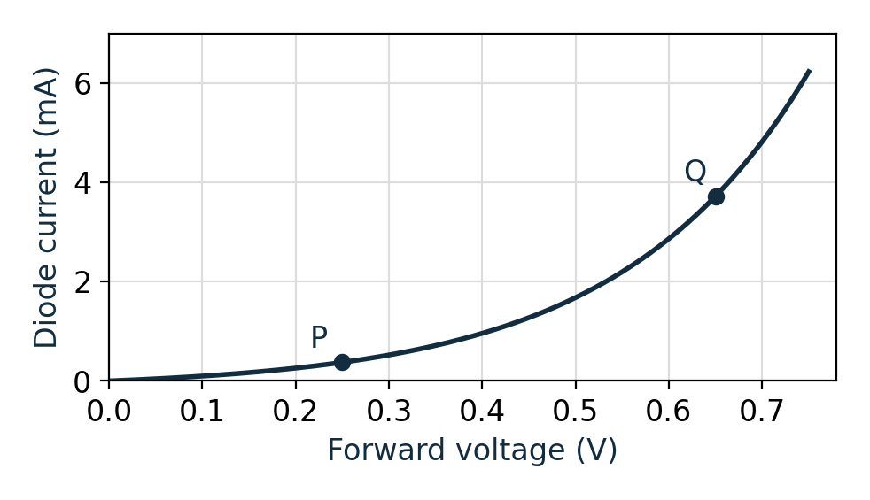
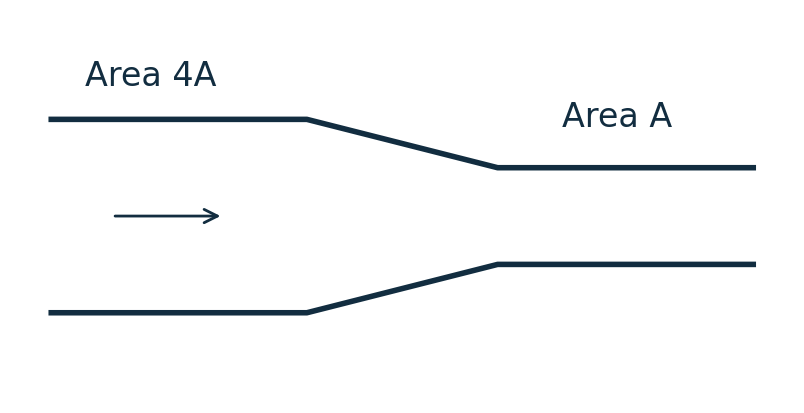
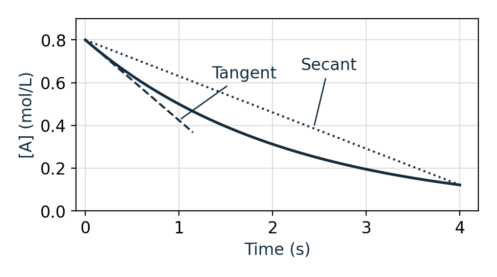
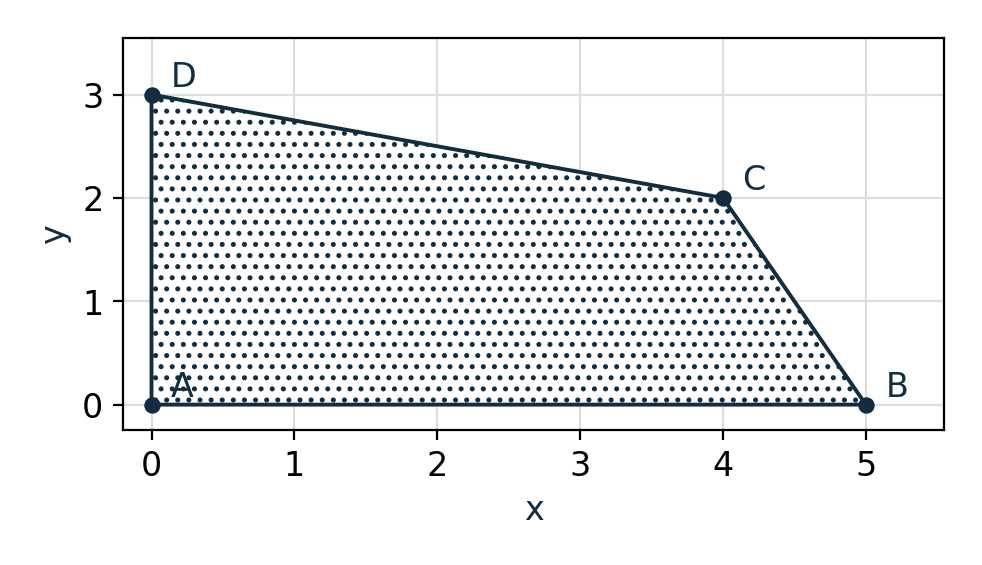

COMEDK UGET Test 9
180 minutes · 180 questions · +1 per correct answer · No negative marking
Physics
Q001. Many light nuclei can release energy by fusion. What feature determines whether a particular fusion has positive energy release?
A) The product always has fewer nucleons
B) The final total binding energy must be smaller
C) The electric charges become all zero
D) The final total rest mass is smaller than the initial total rest mass
Worked solution
Answer: (D) The final total rest mass is smaller than the initial total rest mass
Why and working: The energy release is (m_initial−m_final)c². With conserved nucleon inventory, greater binding of the products reduces their total rest mass.
Why not the others: (A) nucleon count need not fall. (B) smaller binding would raise total rest mass. (C) charged nuclei may fuse.
Q002. A uniform horizontal beam of length 3 m and weight 60 N is pivoted at its left end. An upward force at its right end keeps it level. What magnitude must that force have?
A) 60 N
B) 30 N
C) 90 N
D) 180 N
Worked solution
Answer: (B) 30 N
Why and working: The weight acts 1.5 m from the pivot, producing 90 N·m. An upward force acting at 3 m gives equal opposite torque when F=30 N.
Why not the others: (A) would apply if weight acted at the force location. (C) this is the numerical torque in N·m. (D) does not divide by the lever arm.
Q003. The diode plot marks P and Q in forward bias. Equal small increases of current are made about each operating point. At which point is the voltage increase smaller?

A) P, because its operating current is lower
B) Q, because the current-versus-voltage curve is steeper there
C) Neither, because all diodes have constant slope
D) P, because lower diode voltage always gives a smaller incremental voltage
Worked solution
Answer: (B) Q, because the current-versus-voltage curve is steeper there
Why and working: A steeper dI/dV at Q means a smaller reciprocal dV/dI. For equal current increments Q needs less added voltage.
Why not the others: (A) static current alone is not the incremental resistance. (C) the trace is nonlinear. (D) the slope, not the working voltage alone, fixes the increment.
Q004. At an axial point of a bar magnet its local field points right. A second freely pivoted dipole there points vertically upward in the page. Viewed face-on, in what sense does it begin to rotate?
A) Anticlockwise toward the left
B) It remains still because its axis is transverse
C) Clockwise toward the right
D) It reverses instantaneously without turning
Worked solution
Answer: (C) Clockwise toward the right
Why and working: The torque tends to align the second moment with the local rightward field. From upward to rightward is clockwise.
Why not the others: (A) this turns toward opposite alignment. (B) perpendicular alignment gives nonzero torque. (D) finite torque produces angular acceleration.
Q005. Moving a charge −2 μC between two points increases its potential energy by 6 μJ. What is the final potential minus the initial potential?
A) +3 V
B) −3 V
C) −12 V
D) +12 V
Worked solution
Answer: (B) −3 V
Why and working: Use ΔU=qΔV. Divide +6 μJ by −2 μC to obtain −3 V.
Why not the others: (A) drops the negative charge sign. (C) multiplies instead of dividing. (D) uses multiplication and the wrong sign.
Q006. A neutral conductor is placed in an external electrostatic field. Which change can occur without charge entering or leaving it?
A) Positive excess charge appears everywhere with no negative excess
B) Its net charge becomes nonzero merely by redistribution
C) Opposite excess charges appear on different parts of its surface
D) Mobile charges freeze exactly where they initially were
Worked solution
Answer: (C) Opposite excess charges appear on different parts of its surface
Why and working: Free carriers move until equilibrium is reached. Local surface charge may differ while the integral of the induced excess over the whole conductor stays zero.
Why not the others: (A) positive excess needs negative excess elsewhere. (B) redistribution preserves total charge. (D) conducting carriers can rearrange.
Q007. A wire’s resistivity rises on heating but its length and area are held fixed. What happens to its conductance?
A) It falls because conductance is A/(ρL)
B) It rises because resistance is ρL/A
C) It stays fixed because geometry stays fixed
D) It falls because conductivity is proportional to ρ
Worked solution
Answer: (A) It falls because conductance is A/(ρL)
Why and working: Resistance increases as ρ increases. Conductance is its reciprocal and therefore falls.
Why not the others: (B) this formula implies the inverse conductance decreases. (C) the material property also enters. (D) conductivity is inversely proportional to ρ.
Q008. Two wires of equal length and area are stretched by the same small extension. X has twice the Young modulus of Y. What ratio of elastic energies U_X/U_Y follows?
A) 1/2
B) 1
C) 4
D) 2
Worked solution
Answer: (D) 2
Why and working: At fixed geometry the force for a given extension is proportional to Young modulus. Work stored in a linear ramp is ½F_finalΔL, so the energy ratio is two.
Why not the others: (A) reverses the force ratio. (B) equal extension does not imply equal force. (C) only one linear stiffness factor enters.
Q009. A nonrelativistic electron enters a uniform magnetic field parallel to the field, in a region with no electric field. What happens immediately?
A) It begins a circular path in a transverse plane
B) Its speed rises while its direction is fixed
C) Its speed falls while its direction is fixed
D) It continues in a straight line at constant speed
Worked solution
Answer: (D) It continues in a straight line at constant speed
Why and working: Magnetic force is qv×B, which vanishes for parallel vectors. There is no electric force in the stated region.
Why not the others: (A) circular deflection requires a transverse component. (B) there is no force or magnetic work to accelerate it. (C) there is no force to decelerate it.
Q010. Which specimen is ferromagnetic under ordinary room-temperature textbook conditions?
A) Soft iron
B) Bismuth
C) Copper
D) Aluminium
Worked solution
Answer: (A) Soft iron
Why and working: Iron can form strongly magnetised domains. Bismuth and copper are diamagnetic, and aluminium is weakly paramagnetic.
Why not the others: (B) bismuth is diamagnetic. (C) copper is diamagnetic. (D) aluminium is paramagnetic.
Q011. A pipe flow begins well below its critical speed. Its speed grows until it is well above the critical speed under otherwise unchanged conditions. Which observation is consistent with the transition?
A) Initially turbulent flow necessarily becomes streamline
B) Initially orderly flow gives way to mixing and irregular eddies
C) No motion is possible at either speed
D) The change eliminates viscosity from the fluid
Worked solution
Answer: (B) Initially orderly flow gives way to mixing and irregular eddies
Why and working: Below the critical speed the flow can remain streamline. Sufficiently higher speed promotes turbulence and irregular mixing.
Why not the others: (A) it reverses the trend. (C) fluid speeds are nonzero. (D) the material’s viscosity has not vanished.
Q012. In fixed coils, increasing primary current induces 12 V in an open secondary at 6 A/s. An identical primary has its turns rearranged so its mutual inductance halves. To maintain 12 V, what new current ramp magnitude is required?
A) 3 A/s
B) 6 A/s
C) 12 A/s
D) 24 A/s
Worked solution
Answer: (C) 12 A/s
Why and working: Initially M=12/6=2 H. The new M is 1 H. From emf magnitude M times ramp rate, the new ramp is 12 A/s.
Why not the others: (A) would reduce both factors. (B) would give only 6 V. (D) would give 24 V.
Q013. A device draws 5 A rms from 100 V rms and has an in-phase current component of 3 A. What are its real power and wattless current magnitude?
A) 300 W and 4 A
B) 500 W and 2 A
C) 300 W and 2 A
D) 400 W and 3 A
Worked solution
Answer: (A) 300 W and 4 A
Why and working: Real power is voltage times in-phase current, 300 W. Perpendicular current components add in quadrature, so I_w=√(25−9)=4 A.
Why not the others: (B) uses apparent power and linear subtraction. (C) uses linear subtraction for quadrature currents. (D) switches the two current components.
Q014. While a pure substance at its melting point melts at fixed pressure, where does the absorbed heat go?
A) Entirely into raising temperature throughout melting
B) Into the phase change while temperature stays at the melting point
C) Into removing mass from the system
D) Into lowering internal energy while the solid disappears
Worked solution
Answer: (B) Into the phase change while temperature stays at the melting point
Why and working: At coexistence the two phases share the melting temperature. The latent heat changes phase fractions at that temperature.
Why not the others: (A) temperature rises after the solid is fully melted under continued heating. (C) melting conserves mass. (D) heat input does not lower the material’s enthalpy here.
Q015. A symmetric biconvex thin lens made of glass with index 1.50 is immersed in a transparent liquid of index 1.60. In that liquid, how does it act on a collimated beam?
A) It converges the beam because its faces are convex
B) It has zero power because both materials are transparent
C) It has the same positive power as it had in air
D) It diverges the beam because the relative index of lens to liquid is below one
Worked solution
Answer: (D) It diverges the beam because the relative index of lens to liquid is below one
Why and working: The curvature factor of a biconvex lens is positive. The lens-maker factor is n_lens/n_liquid−1, negative for the specified indices. Thus the power is negative.
Why not the others: (A) the sign of the relative-index factor is essential. (B) index matching rather than mere transparency would give zero power. (C) the surrounding index changes the power.
Q016. At fixed wavelength, a slit is made narrower and the detector is reset to measure angle rather than screen distance. What happens to the angular separation between the two first minima?
A) It increases
B) It decreases
C) It is unchanged because the detector measures angle
D) It necessarily falls to zero
Worked solution
Answer: (A) It increases
Why and working: A narrower slit gives broader diffraction and moves the first minima to larger angles on both sides of the centre.
Why not the others: (B) would fit an increased slit width. (C) slit width determines the angular distribution. (D) the two minima do not move toward the centre.
Q017. Which condition is sufficient to conclude that an ideal gas’s internal energy stayed constant during a process?
A) Its volume stayed constant
B) Its pressure stayed constant
C) Its temperature stayed constant
D) It received no heat
Worked solution
Answer: (C) Its temperature stayed constant
Why and working: For a fixed amount of ideal gas, internal energy depends on temperature. Isothermal evolution therefore keeps U fixed.
Why not the others: (A) temperature may change at fixed volume. (B) temperature changes with volume at fixed pressure. (D) adiabatic work can alter temperature.
Q018. A sinusoidal source feeds an ideal half-wave rectifier. How long is the interval between consecutive positive voltage peaks at the load?
A) Half an input period
B) One input period
C) Two input periods
D) One quarter of an input period
Worked solution
Answer: (B) One input period
Why and working: One half-cycle per input period is blocked. One surviving positive lobe therefore peaks in each full source cycle.
Why not the others: (A) this is the peak spacing for full-wave rectification. (C) there is a pulse in each source cycle. (D) one pulse occupies part of each period but peaks are farther apart.
Q019. A closed surface encloses no net charge but is in an electric field from remote charges. Which statement must hold?
A) The field is zero at every surface point
B) The flux through every individual patch is zero
C) All entering field lines must end inside the surface
D) The total outward flux is zero
Worked solution
Answer: (D) The total outward flux is zero
Why and working: Gauss’s law relates total signed flux to net enclosed charge. Flux on separate patches can be nonzero and cancel.
Why not the others: (A) the external sources can give a finite local field. (B) patch contributions need not vanish. (C) with zero net charge any signed flux in balances flux out.
Q020. Equal amounts of monatomic and rigid diatomic ideal gases receive the same energy at constant volume. Ignore vibration. What is the ratio ΔT_mono/ΔT_dia?
A) 3/5
B) 5/3
C) 1
D) 2
Worked solution
Answer: (B) 5/3
Why and working: The molar constant-volume heat capacities are 3R/2 and 5R/2 by equipartition. For equal Q and amount, ΔT varies as 1/C_V, giving 5/3.
Why not the others: (A) inverts the heating ratio. (C) their active degree counts differ. (D) ignores that both have three translation modes.
Q021. An isolated capacitor is completely filled by a dielectric with relative permittivity 4, keeping its geometry fixed. Its original stored energy was U. What new energy follows after complete insertion?
A) 4U
B) U
C) U/4
D) U/16
Worked solution
Answer: (C) U/4
Why and working: The permittivity multiplies capacitance by four. Since isolated free charge stays fixed, U=Q²/(2C) becomes four times smaller.
Why not the others: (A) this is the fixed-voltage energy scaling. (B) capacitance changes even when free charge is fixed. (D) the capacitance enters to first power at fixed Q.
Q022. A cell of emf 1.5 V is measured by an ideal voltmeter with no load. What terminal voltage is measured?
A) Zero
B) A larger value depending on internal resistance
C) 1.5 V
D) A smaller value depending on internal resistance
Worked solution
Answer: (C) 1.5 V
Why and working: An ideal voltmeter takes no current. The internal drop Ir is therefore zero and terminal voltage equals emf.
Why not the others: (A) an open circuit can still have a voltage. (B) without current there is no internal rise. (D) the internal drop vanishes.
Q023. A small-angle pendulum is moved to an ideal laboratory where local gravity has half the original magnitude. To keep its period fixed, what should happen to its length?
A) Double it
B) Halve it
C) Reduce it to one quarter
D) Leave it fixed
Worked solution
Answer: (B) Halve it
Why and working: The period is 2π√(ℓ/g), so keeping ℓ/g fixed requires halving ℓ along with g.
Why not the others: (A) would quadruple ℓ/g. (C) would halve ℓ/g. (D) a smaller g would lengthen the period.
Q024. A straight wire feels a magnetic force of 8 N at right angles to a uniform field. With current and active length unchanged, what is the force at 30° to that field?
A) 8 N
B) 4√3 N
C) 16 N
D) 4 N
Worked solution
Answer: (D) 4 N
Why and working: The force is BIL sinθ. The earlier value was BIL; the new sine is one half.
Why not the others: (A) would require orientation at 90°. (B) uses cosine of 30°. (C) the factor is 1/2 rather than 2.
Q025. A heated iron specimen loses its permanent magnetisation above the Curie temperature. Does this imply that it cannot respond at all to an applied field there?
A) Yes, all atomic moments cease to exist
B) Yes, because heated samples repel all fields
C) No, it can still respond paramagnetically while ferromagnetic order is lost
D) No, it must remain a permanent ferromagnet in any weak field
Worked solution
Answer: (C) No, it can still respond paramagnetically while ferromagnetic order is lost
Why and working: Thermal disorder destroys spontaneous ferromagnetic ordering. A field can still bias microscopic moments, producing a weaker paramagnetic response.
Why not the others: (A) loss of order does not require loss of every moment. (B) nonferromagnetic does not imply universal repulsion. (D) permanent order is what was destroyed.
Q026. A string fixed at both ends supports its third harmonic. How many antinodes does its standing wave have?
A) Three
B) Two
C) Four
D) Six
Worked solution
Answer: (A) Three
Why and working: For the third harmonic the string contains three half-wavelengths. Each half-wave segment has one antinode between its nodes.
Why not the others: (B) two applies to the second harmonic. (C) four is the total node count including the ends. (D) counts too many oscillation maxima.
Q027. A generator loop is rotated at angular frequency ω. The peak induced emf is E. At constant ω and uniform B, how does replacing the loop by two series turns of the same area and winding sense affect peak emf and frequency?
A) Both double
B) Peak stays fixed, frequency doubles
C) Peak doubles, frequency stays fixed
D) Peak halves, frequency stays fixed
Worked solution
Answer: (C) Peak doubles, frequency stays fixed
Why and working: The flux linkage adds for matching turns, doubling N B A ω. The same time per revolution fixes the frequency.
Why not the others: (A) frequency is set by rotation rate. (B) adding turns changes emf. (D) the turn emfs reinforce.
Q028. The image in a thin lens is real and has magnification −2. If the object height is doubled while lens and object distance remain fixed, what happens to image height magnitude and orientation?
A) Its height stays fixed and it becomes upright
B) Its height quadruples and it stays inverted
C) Its height doubles and it remains inverted
D) Its height doubles and it becomes upright
Worked solution
Answer: (C) Its height doubles and it remains inverted
Why and working: At fixed optical distances, the signed magnification remains −2. Multiplying a doubled object height by the same negative factor doubles image height without changing orientation.
Why not the others: (A) magnification remains nonzero and negative. (B) only object height doubles. (D) a negative magnification still denotes inversion.
Q029. The position of an object is x=t³−3t² in SI units. At what positive time is its acceleration zero even though its velocity is nonzero, and what is that velocity?
A) 1 s and −3 m/s
B) 2 s and zero velocity
C) 1 s and +3 m/s
D) 3 s and zero velocity
Worked solution
Answer: (A) 1 s and −3 m/s
Why and working: The velocity is v=3t²−6t and acceleration is a=6t−6. Setting a=0 gives t=1 s, where v=−3 m/s.
Why not the others: (B) velocity vanishes at 2 s but acceleration does not. (C) substitution gives negative velocity. (D) both derivatives are nonzero at 3 s.
Q030. A uniformly charged infinite line gives field magnitude E at distance r. What radius encloses the same charge per unit length but gives field E/4?
A) 4r
B) 2r
C) r/4
D) 16r
Worked solution
Answer: (A) 4r
Why and working: For a cylinder of fixed length, Gauss’s law gives E·2πrL=λL/ε₀, so E is inversely proportional to r.
Why not the others: (B) would give E/2. (C) would strengthen the field. (D) would give E/16.
Q031. A parallel capacitor bank has two unknown identical branches. Another technician measures each branch at 6 μF. Which rearrangement gives 3 μF without adding or removing any capacitor?
A) Reconnect the two capacitors in series
B) Keep the two capacitors in parallel and reverse both plates of one
C) Disconnect one branch and leave one capacitor
D) Connect both capacitor ends to the same two nodes as before
Worked solution
Answer: (A) Reconnect the two capacitors in series
Why and working: Two equal capacitances C in series have equivalent C/2=3 μF. The earlier parallel layout would give 12 μF.
Why not the others: (B) an ordinary capacitor’s connection polarity does not change the parallel sum. (C) one capacitor alone gives 6 μF. (D) identical endpoints leave the connection parallel.
Q032. Nonzero vectors a and b are parallel. Which relationship between their dot and cross products must hold?
A) Their dot and cross products are both zero
B) Their cross product is zero and their dot product is nonzero
C) Their dot product is zero and their cross product is nonzero
D) Their cross-product magnitude is the product of their magnitudes
Worked solution
Answer: (B) Their cross product is zero and their dot product is nonzero
Why and working: The angle is zero or π. Its sine is zero, but the cosine is ±1, so the nonzero-length product gives a nonzero dot product.
Why not the others: (A) the dot product does not vanish for such directions. (C) zero dot product describes perpendicular directions. (D) that cross magnitude requires a right angle.
Q033. Two ideal cells of emfs 3 V and 1 V are placed in series opposition. What equivalent emf magnitude drives the combination?
A) 4 V
B) 3 V
C) 2 V
D) Zero
Worked solution
Answer: (C) 2 V
Why and working: Emfs are signed potential rises. Opposition subtracts the smaller magnitude from the larger, leaving 2 V.
Why not the others: (A) adds driving emfs as if aiding. (B) does not include the opposing cell. (D) would require equal emfs.
Q034. Two parallel long wires attract when currents are I and 2I. If the second current is reversed and doubled in magnitude, what changes at the same separation?
A) It stays attractive and doubles
B) The force becomes repulsive and doubles in magnitude
C) It becomes repulsive and halves
D) It remains unchanged
Worked solution
Answer: (B) The force becomes repulsive and doubles in magnitude
Why and working: Changing the relative current direction turns attraction into repulsion. Doubling one magnitude doubles the product of currents.
Why not the others: (A) opposite currents repel. (C) force is proportional to the product. (D) both sign and magnitude change.
Q035. Three concurrent forces balance. Two have equal magnitude F and meet at 120°. What magnitude is required for the third?
A) 2F
B) F
C) √3 F
D) Zero
Worked solution
Answer: (B) F
Why and working: The first resultant has squared magnitude F²+F²+2F² cos120°=F². The third force must cancel that resultant.
Why not the others: (A) requires the first forces to be aligned. (C) would fit separation of 60°. (D) the first pair does not point in opposite directions.
Q036. An external current source brings a transformer’s primary to a steady positive DC current. After the switching transient has ended, what secondary emf does ideal induction predict?
A) A sustained secondary voltage set by the turns ratio
B) A sustained voltage twice its AC value
C) A sustained voltage with frequency 50 Hz
D) Zero because the linked flux no longer changes in steady state
Worked solution
Answer: (D) Zero because the linked flux no longer changes in steady state
Why and working: The primary current and linked flux are constant in the specified steady state. Faraday’s law gives zero secondary emf.
Why not the others: (A) the AC turns relation does not create a sustained DC secondary from static flux. (B) that does not follow from the flux derivative. (C) steady DC has no 50 Hz cycle.
Q037. Two thin lenses in contact have powers +2 D and −5 D. What is the focal length of the pair?
A) +1/3 m
B) −3 m
C) −1/3 m
D) +1/7 m
Worked solution
Answer: (C) −1/3 m
Why and working: Signed powers add to −3 D. The focal length in metres is their reciprocal, −1/3.
Why not the others: (A) drops the sign. (B) reports the numerical power in metres. (D) adds absolute powers instead of signed ones.
Q038. At the top of a vertical circle a small mass on a taut light string has speed √(2gR). What is the tension there?
A) mg
B) 2mg
C) 3mg
D) Zero
Worked solution
Answer: (A) mg
Why and working: At the top both weight and tension point inward. Therefore T+mg=mv²/R=2mg, giving T=mg.
Why not the others: (B) this equals the total inward force. (C) adds weight instead of subtracting it from inward demand. (D) zero would apply at v=√(gR).
Q039. An infinite sheet has surface charge density +σ. How do field magnitudes at heights a and 3a on the same side compare?
A) The nearer field is three times larger
B) The nearer field is nine times larger
C) The farther field is three times larger
D) They are equal
Worked solution
Answer: (D) They are equal
Why and working: A Gaussian pillbox through a uniform infinite sheet gives field magnitude σ/(2ε₀), independent of distance.
Why not the others: (A) uses the line-charge field law. (B) uses the point-charge field law. (C) the sheet field does not grow with distance.
Q040. If a dielectric is removed from an ideal parallel-plate capacitor without changing its area or spacing, how does capacitance change?
A) It decreases
B) It increases
C) It stays fixed
D) It becomes negative
Worked solution
Answer: (A) It decreases
Why and working: Capacitance is κε₀A/d with a completely filling dielectric. Removing it replaces κ>1 with approximately one for air.
Why not the others: (B) lower permittivity gives less capacitance. (C) geometry is fixed but permittivity changes. (D) the parameters remain positive.
Q041. Net torque 12 N·m acts on a flywheel with moment of inertia 4 kg·m². Starting from 2 rad/s, what angular speed does it reach after 3 s with constant torque?
A) 9 rad/s
B) 11 rad/s
C) 5 rad/s
D) 14 rad/s
Worked solution
Answer: (B) 11 rad/s
Why and working: The angular acceleration is τ/I=3 rad/s². Over 3 s the increase is 9 rad/s. Add the starting value to get 11.
Why not the others: (A) reports just the change. (C) treats 3 rad/s² as a one-time increment over the full interval. (D) does not divide by the given inertia.
Q042. Three outward current arrows at a junction are labelled 1 A, −2 A and I. What is I under steady conditions?
A) −1 A
B) +3 A
C) −3 A
D) +1 A
Worked solution
Answer: (D) +1 A
Why and working: The signed sum of all currents directed out is zero. Thus 1−2+I=0 and I=+1 A.
Why not the others: (A) makes the net outward current −2 A. (B) adds the unsigned magnitudes. (C) treats the inward contribution as positive outward current.
Q043. Why is the magnetic moment of a flat current loop proportional to area at fixed current?
A) Only the perimeter matters, irrespective of area
B) Moment is the same for all loops of fixed current
C) The moment grows with area squared
D) Its moment magnitude is current times enclosed area
Worked solution
Answer: (D) Its moment magnitude is current times enclosed area
Why and working: A planar loop with uniform current has moment I times its oriented area vector. Doubling the enclosed area doubles its magnitude.
Why not the others: (A) area is the relevant geometric factor. (B) different areas have different dipole moments. (C) the dependence is linear.
Q044. A spacecraft is launched from a spherical body at a fixed radius. If the body’s mass is quadrupled with radius unchanged, how does escape speed change?
A) It doubles
B) It quadruples
C) It halves
D) It is unchanged
Worked solution
Answer: (A) It doubles
Why and working: Escape speed satisfies ½mv²=GMm/R, so v_esc=√(2GM/R). Quadrupling central mass doubles the square root.
Why not the others: (B) omits the square root. (C) inverts the mass dependence. (D) radius is not the only parameter.
Q045. A prism’s ray path has equal external incidence and emergence angles. An internal ray makes 25° with each of the two face normals. What prism apex angle is consistent with this geometry?
A) 50°
B) 25°
C) 65°
D) 90°
Worked solution
Answer: (A) 50°
Why and working: At the two faces, the internal refraction angles add to the prism angle. Hence A=25°+25°=50°.
Why not the others: (B) uses one face rather than both. (C) subtracts a ray angle from 90°. (D) there is no right-angle condition on the prism.
Q046. A uniformly charged conducting spherical shell of radius R carries +Q. A Gaussian surface is concentric at radius 2R. What is flux, and how would its field magnitude change if its radius became 4R?
A) Flux Q/ε₀, field becomes one quarter
B) Flux Q/ε₀, field becomes one half
C) Flux Q/(4ε₀), field becomes one quarter
D) Flux zero, field unchanged
Worked solution
Answer: (A) Flux Q/ε₀, field becomes one quarter
Why and working: Both exterior surfaces enclose all Q, fixing flux. The field is radial and uniform on each sphere, so doubling radius quadruples area and quarters E.
Why not the others: (B) uses inverse first-power scaling. (C) flux is unchanged for fixed enclosed charge. (D) the exterior encloses nonzero Q.
Q047. The diagram shows a horizontal pipe narrowing from its wider section. According to the section areas labelled in the diagram, what is the pressure difference P_wide−P_narrow for ideal steady water flow if the wide-section speed is u?

A) 3ρu²/2
B) 15ρu²/2
C) −15ρu²/2
D) 16ρu²
Worked solution
Answer: (B) 15ρu²/2
Why and working: Continuity gives narrow speed 4u. At equal height Bernoulli gives ½ρ[(4u)²−u²]=15ρu²/2.
Why not the others: (A) uses linear speed difference. (C) the narrow region has lower static pressure. (D) omits both the half and upstream kinetic term.
Q048. A capacitor of 10 μF holds 2 V. What is its stored energy?
A) 20 μJ
B) 40 μJ
C) 10 μJ
D) 5 μJ
Worked solution
Answer: (A) 20 μJ
Why and working: Apply U=½CV²=½×10 μF×4 V²=20 μJ.
Why not the others: (B) omits one-half. (C) uses a linear voltage instead of voltage squared. (D) uses too small a voltage factor.
Q049. For a balanced Wheatstone bridge, swapping the positions of the two resistors in both divider branches gives what detector reading under the same supply?
A) Its current becomes positive unless both ratios were one
B) Its current always reverses from a finite value
C) The detector still reads zero
D) It carries the full source current
Worked solution
Answer: (C) The detector still reads zero
Why and working: Both branch ratios are inverted together, so they are still equal. The detector endpoints remain at equal potential.
Why not the others: (A) equality survives inversion of both ratios. (B) the detector current initially was zero. (D) the supply current flows through the dividers.
Q050. A slab conducting heat steadily has temperature difference ΔT between its ends. With the same area and material, doubling the thickness while keeping ΔT fixed changes heat current how?
A) It doubles
B) It becomes one quarter
C) It stays fixed
D) It halves
Worked solution
Answer: (D) It halves
Why and working: Steady conductive power through a uniform slab is kAΔT/L. The same end temperatures across twice the distance halve the gradient.
Why not the others: (A) reverses the distance effect. (B) the dependence is inverse linear. (C) the length is not fixed.
Q051. A galvanometer can be made into a voltmeter by connecting which component and why?
A) A small resistance in parallel maximises sensitivity to voltage
B) A zero resistance in series blocks current
C) A large resistor directly shorting the source makes a proper voltmeter
D) A large resistance in series limits current in the meter branch
Worked solution
Answer: (D) A large resistance in series limits current in the meter branch
Why and working: Series resistance increases the voltage at which the movement reaches its fixed full-scale current. It also keeps the instrument’s input current small.
Why not the others: (A) a low shunt is the ammeter technique. (B) zero resistance does not block flow. (C) a parallel short does not create a high-resistance voltage instrument.
Q052. A compound microscope uses an objective and an eyepiece. What is the eyepiece intended to magnify?
A) The objective lens itself
B) The intermediate real image already formed by the objective
C) The original object directly with no intermediate image
D) A virtual image outside the instrument already projected on a screen
Worked solution
Answer: (B) The intermediate real image already formed by the objective
Why and working: The objective forms a magnified real intermediate image. The eyepiece views that image as a magnifier to increase the apparent angle.
Why not the others: (A) the lens support is not the viewed object. (C) the objective’s image supplies the eyepiece object. (D) a virtual image cannot be directly caught on a screen.
Q053. A gas expands near equilibrium against a pressure just infinitesimally lower than its own. Which feature supports the reversible limit?
A) The gas rushes into a vacuum with no opposing pressure
B) A tiny pressure increase could reverse the direction without a large disturbance
C) It always generates large viscous dissipation
D) The process cannot be reversed by changing any external condition
Worked solution
Answer: (B) A tiny pressure increase could reverse the direction without a large disturbance
Why and working: A quasistatic mechanical process with infinitesimal driving difference can be reversed by changing its sign, in the absence of dissipation.
Why not the others: (A) free expansion is irreversible. (C) dissipation prevents reversible operation. (D) infinitesimal adjustment is what enables reversal.
Q054. In a reflecting telescope, what component does the job performed by the large front objective lens of a refractor?
A) A plane mirror alone that provides convergence
B) The eyepiece only, with no large light collector
C) A concave mirror that brings incoming parallel light to a real focus
D) A concave diverging lens at the tube entrance
Worked solution
Answer: (C) A concave mirror that brings incoming parallel light to a real focus
Why and working: A curved reflecting objective gathers light and focuses it to a real image. The eyepiece is a separate viewing stage.
Why not the others: (A) plane reflection alone does not converge a parallel bundle. (B) the eyepiece acts on an image made by the objective. (D) the reflector uses a mirror for the principal light gathering.
Q055. Three identical small conducting spheres are very widely separated. Their initial charges are +8 nC, −2 nC and 0. They are connected simultaneously by ideal conducting wires until equal potential is reached, then disconnected in the symmetric equal-capacitance approximation. What charge does each have?
A) +3 nC
B) +6 nC
C) Zero
D) +2 nC
Worked solution
Answer: (D) +2 nC
Why and working: The isolated total is +6 nC. Equal capacitance and equal final potential give equal final charges, so each has +6/3=+2 nC.
Why not the others: (A) would give +9 nC total. (B) this is the sum rather than each share. (C) the positive total charge cannot disappear.
Q056. A dust grain has mean free path ℓ in a dilute gas. What does ℓ describe for the grain in this statistical model?
A) The total distance travelled in its lifetime
B) The mean collision time without reference to speed
C) The separation of all gas molecules at every instant
D) The mean distance it travels between successive collisions
Worked solution
Answer: (D) The mean distance it travels between successive collisions
Why and working: Mean free path is a length averaged over collisions. It need not equal any individual flight distance.
Why not the others: (A) many free paths can occur. (B) time is a different variable. (C) instantaneous intermolecular spacing is not the path length.
Q057. Two points around a positive point charge lie on the same sphere centred on the charge. What is the potential difference between the points?
A) It is always the sphere’s nonzero potential relative to infinity
B) Positive if measured clockwise
C) Zero
D) It depends on the speed of the moving test charge
Worked solution
Answer: (C) Zero
Why and working: The potential of the source depends only on radius kQ/r. Equal radii give equal values and zero difference.
Why not the others: (A) confuses potential value with difference. (B) rotation on the sphere does not alter distance. (D) potential difference is independent of test-charge speed.
Q058. A metal wire is widened into a transition region without changing material. In a direct measurement, fewer electrons cross each square millimetre per second in the wider region. What must stay the same between sections if charge is not accumulating?
A) The local carrier flux through each unit of area
B) Electron drift speed everywhere
C) The voltage drop for every equal-length piece no matter its cross section
D) The total number of electrons crossing the whole section per second
Worked solution
Answer: (D) The total number of electrons crossing the whole section per second
Why and working: Steady charge conservation makes total current identical through successive cross sections. A lower areal crossing rate can be offset by a larger total cross section.
Why not the others: (A) that rate per unit area is stated smaller. (B) at equal carrier density the greater area lowers drift speed. (C) equal length does not imply equal resistance in differing areas.
Q059. A pipe open at both ends gives fundamental frequency f. If its effective length doubles while sound speed stays fixed, what is the fundamental?
A) 2f
B) f/4
C) f/2
D) It no longer has a fundamental
Worked solution
Answer: (C) f/2
Why and working: An open pipe’s fundamental fits half a wavelength along its length. Thus f=v/(2L) and doubling L halves it.
Why not the others: (A) reverses the length dependence. (B) the dependence is inverse linear. (D) the longer pipe still has a first mode.
Q060. Two compasses are placed on opposite sides of a long horizontal wire, each at the same distance from the wire. Neglect Earth’s field for this comparison. How do their north-seeking needle directions compare when the wire carries current?
A) They point oppositely because the wire field circulates around the wire
B) They both lie along the current direction
C) They point radially inward toward the wire
D) They have no preferred direction
Worked solution
Answer: (A) They point oppositely because the wire field circulates around the wire
Why and working: The compass follows the tangent to the circular field around the wire. Diametrically opposing positions have opposite tangents.
Why not the others: (B) current itself is axial but the field circles it. (C) radial inward is not tangent. (D) nonzero current produces a local magnetic field.
Chemistry
Q061. A solution has mass 150 g and contains 12 g solute. What mass of pure solvent must be added to make it 5% solute by mass?
A) 240 g
B) 60 g
C) 138 g
D) 90 g
Worked solution
Answer: (D) 90 g
Why and working: The solute mass remains 12 g. At 5% the total must be 12/0.05=240 g, so add 240−150=90 g.
Why not the others: (A) this is the total final mass. (B) does not give a total of 240 g. (C) this was the initial solvent mass.
Q062. What product structure is consistent with the name 3-methylpent-1-yne?
A) CH₃C≡CCH(CH₃)CH₃
B) HC≡CCH(CH₃)CH₂CH₃
C) HC≡CCH₂CH(CH₃)CH₃
D) CH₂=CHCH(CH₃)CH₂CH₃
Worked solution
Answer: (B) HC≡CCH(CH₃)CH₂CH₃
Why and working: The five-carbon parent has C1≡C2 and a methyl branch on C3. The terminal triple-bond carbon carries H.
Why not the others: (A) its triple bond is internal. (C) its branch is on C4. (D) this is an alkene.
Q063. Standard potentials for three reduction couples X²⁺/X, Y²⁺/Y and Z²⁺/Z are −0.40, +0.20 and +0.60 V. Which pair gives the largest positive cell emf and in what direction?
A) X oxidised, Y²⁺ reduced; 0.60 V
B) Z oxidised, X²⁺ reduced; 1.00 V
C) X oxidised, Z²⁺ reduced; 1.00 V
D) Y oxidised, Z²⁺ reduced; 0.80 V
Worked solution
Answer: (C) X oxidised, Z²⁺ reduced; 1.00 V
Why and working: To maximise E°_cathode−E°_anode, choose the highest reduction potential for cathode and lowest for anode. Then 0.60−(−0.40)=1.00 V.
Why not the others: (A) this emf is positive but smaller. (B) this order gives −1.00 V. (D) this pair gives only 0.40 V.
Q064. A plot shows disappearance of A. What comparison of the initial disappearance rate and average rate over the marked time interval follows from the tangent and secant?

A) Initial rate is larger
B) Average rate is larger
C) They are necessarily equal
D) Neither can be compared because concentration falls
Worked solution
Answer: (A) Initial rate is larger
Why and working: Initial disappearance rate is the magnitude of the tangent slope at the start. The secant across the full interval has a smaller magnitude because the plot flattens.
Why not the others: (B) the secant has the smaller magnitude. (C) that would fit a linear concentration trace. (D) rates are represented by slopes.
Q065. Which subshell occupancy is half-filled?
A) 3d⁵
B) 3d²
C) 3d¹⁰
D) 3d⁰
Worked solution
Answer: (A) 3d⁵
Why and working: The five d orbitals can hold at most ten electrons. Five is half that capacity, with one electron in each in the usual Hund filling.
Why not the others: (B) two is below half capacity. (C) ten is complete filling. (D) zero is an empty subshell.
Q066. Which observation establishes that an element with a filled d subshell in its neutral atom qualifies as a transition element in the usual definition?
A) Its atomic mass is large
B) All its usual ions have a filled d shell
C) It belongs to the p block and never forms d states
D) It forms a common ion with an incomplete d subshell
Worked solution
Answer: (D) It forms a common ion with an incomplete d subshell
Why and working: Transition elements have an incomplete d subshell in the atom or an ion. Copper illustrates the ion condition because Cu²⁺ is d⁹.
Why not the others: (A) mass alone is not the criterion. (B) with both atom and common ions d¹⁰, the criterion fails. (C) p-block identity does not establish the criterion.
Q067. Which formula is compatible with a neutral metal complex containing exactly two neutral bidentate ligands L and two coordinated chloride ions for M²⁺?
A) [M(L)Cl₂]
B) [M(L)₂]Cl₂
C) [M(L)₄]²⁺
D) [M(L)₂Cl₂]
Worked solution
Answer: (D) [M(L)₂Cl₂]
Why and working: Two bidentate ligands give four donors and two bound chlorides give two more. Their −2 charge balances M²⁺.
Why not the others: (A) contains only one L. (B) the chlorides are outside the complex brackets. (C) has four L and no bound chloride.
Q068. For a process at constant T and pressure, ΔH=−20 kJ and TΔS=−25 kJ. What is the sign and value of ΔG?
A) +5 kJ
B) −45 kJ
C) −5 kJ
D) +45 kJ
Worked solution
Answer: (A) +5 kJ
Why and working: Compute ΔG=ΔH−TΔS=−20−(−25)=+5 kJ. The entropy decrease dominates the favourable enthalpy.
Why not the others: (B) adds TΔS with the wrong sign. (C) reverses the sign of the net difference. (D) adds only the unsigned magnitudes.
Q069. Which haloalkane has a carbon–halogen bond with least polarity by the usual electronegativity comparison in the series CH₃F, CH₃Cl, CH₃Br, CH₃I?
A) CH₃F
B) CH₃Cl
C) CH₃Br
D) CH₃I
Worked solution
Answer: (D) CH₃I
Why and working: Iodine is the least electronegative of these halogens and has the smallest difference from carbon. This is a polarity comparison, independent of bond length ranking.
Why not the others: (A) fluorine gives the largest difference. (B) chlorine is more electronegative than iodine. (C) bromine is also more electronegative than iodine.
Q070. A synthesis first generates propanone and then adds hydrogen selectively across its C=O bond. Which hydroxyl placement results in the alcohol?
A) The OH lies on carbon 1 of propane
B) The OH becomes part of a COOH group on carbon 2
C) The OH lies on carbon 2 of propane
D) No C–O bond remains
Worked solution
Answer: (C) The OH lies on carbon 2 of propane
Why and working: Reduction adds hydrogen to carbonyl C and O without moving the C–O attachment. The carbonyl was on C2, giving propan-2-ol.
Why not the others: (A) this would correspond to reduction of propanal. (B) a carboxyl group is not formed by reduction. (D) the C–O bond remains as a single bond.
Q071. Two alkynes have formula C₄H₆. Only one yields a precipitate in the conventional ammoniacal silver nitrate test for a terminal alkyne. Which and why?
A) But-1-yne, because its sp carbon bears a replaceable terminal H
B) But-2-yne, because internal triple bonds supply more acidic terminal H
C) Both, because every triple bond has a terminal H
D) Neither, because terminal alkyne H is bonded to sp³ carbon
Worked solution
Answer: (A) But-1-yne, because its sp carbon bears a replaceable terminal H
Why and working: But-1-yne ends in C≡C–H. That hydrogen is the acidic proton in the textbook metal acetylide test; but-2-yne has no terminal H.
Why not the others: (B) but-2-yne has alkyl groups at both end carbons of the triple bond. (C) internal alkynes lack that hydrogen. (D) the terminal bond uses an sp carbon.
Q072. What is the systematic name of OHC–CH₂–CH(CH₃)–CH₂–CHO?
A) 3-methylpentan-2-one
B) 2-methylpentane-1,5-dial
C) 3-methylpentane-1,5-dial
D) 3-methylbutane-1,4-dial
Worked solution
Answer: (C) 3-methylpentane-1,5-dial
Why and working: The five-carbon parent includes both aldehydic carbons at its two ends. The central carbon C3 carries methyl, so the principal suffix is dial.
Why not the others: (A) this ignores both terminal aldehydes. (B) the branch is on the central carbon. (D) the chain includes five carbons, not four.
Q073. How is (CH₃)₃N classified?
A) Tertiary amine
B) Secondary amine
C) Primary amine
D) Quaternary ammonium ion
Worked solution
Answer: (A) Tertiary amine
Why and working: Nitrogen is bonded to three methyl groups and retains a lone pair. A quaternary ammonium ion instead has four organic substituents and a positive charge.
Why not the others: (B) secondary amines have two organic groups on N. (C) primary amines have one. (D) there are three substituents and no formal charge.
Q074. How many π electrons occupy the delocalised ring system of benzene in its usual aromatic description?
A) Six
B) Three
C) Twelve
D) Zero
Worked solution
Answer: (A) Six
Why and working: Each of the six sp² carbons contributes one electron in its unhybridised p orbital. Together these make the six-electron π system.
Why not the others: (B) three counts pairs rather than electrons. (C) σ framework electrons are separate. (D) the p orbitals remain occupied.
Q075. Two open-chain monosaccharides have the same carbon count. One has terminal CHO and the other an internal C=O. In what sense are they classified differently?
A) They must be different sizes because of the carbonyl position
B) They are aldose and ketose respectively, with the same pentose-or-hexose size category
C) They must have opposite signs of optical rotation
D) Both are ketoses because both contain oxygen
Worked solution
Answer: (B) They are aldose and ketose respectively, with the same pentose-or-hexose size category
Why and working: Aldose versus ketose describes the carbonyl type. The length category depends independently on the number of carbon atoms.
Why not the others: (A) moving the group does not change carbon count. (C) optical signs are not determined here. (D) an aldehyde does not count as a ketone.
Q076. A dissolved gas has mole fraction x at partial pressure p. At the same temperature and dilute limit, which pressure gives 3x in the same solvent?
A) p/3
B) 3p
C) √3 p
D) 9p
Worked solution
Answer: (B) 3p
Why and working: At fixed T and solvent, Henry’s law gives p=K_H x. Tripling x requires tripling p in the stated range.
Why not the others: (A) reverses the proportionality. (C) there is no square-root dependence. (D) the dependence is linear.
Q077. During electrophilic aromatic substitution, why can an intermediate form without the final product becoming a permanently nonaromatic addition product?
A) The incoming electrophile instantly detaches in every case
B) A benzene carbon is expelled as elemental carbon
C) The attacked carbon stays permanently bonded to both H and the electrophile
D) Loss of H⁺ restores the ring’s delocalised π system
Worked solution
Answer: (D) Loss of H⁺ restores the ring’s delocalised π system
Why and working: Attack briefly disrupts aromaticity in the sigma complex. Deprotonation from the substituted carbon returns its electrons to the aromatic network.
Why not the others: (A) substitution retains the new group. (B) the six ring atoms are retained. (C) the old H is removed.
Q078. For a two-electron cell at 298 K, E°=0.30 V and Q=100. Using 0.059 V in the base-10 Nernst form, what is E?
A) 0.182 V
B) 0.359 V
C) 0.241 V
D) 0.300 V
Worked solution
Answer: (C) 0.241 V
Why and working: E=E°−(0.059/2)log₁₀Q. With log₁₀100=2, subtract 0.059 V.
Why not the others: (A) omits the two-electron divisor. (B) adds the reaction quotient term. (D) Q differs from one.
Q079. The initial rate of a reaction doubles when concentration of A doubles at fixed temperature. A catalyst is later added at the original concentration. Why can this raise rate without requiring still more A?
A) It must create extra A from nothing
B) It changes Avogadro’s number
C) It can increase the rate constant by offering a lower-barrier pathway
D) It makes collisions cease while increasing rate
Worked solution
Answer: (C) It can increase the rate constant by offering a lower-barrier pathway
Why and working: Catalysis changes the reaction pathway or effective activation energy, so a higher rate can result under the same starting concentration.
Why not the others: (A) reactant amount does not have to increase. (B) the counting constant is not a kinetic parameter. (D) molecular encounters can remain important.
Q080. Why does ordinary bromination of benzene use FeBr₃ while benzene does not simply add Br₂ in the same manner as an isolated alkene?
A) FeBr₃ permanently destroys the ring so each carbon adds bromine
B) FeBr₃ activates Br₂ for electrophilic substitution that ultimately restores aromaticity
C) It supplies protons to hydrogenate benzene into cyclohexane
D) It converts benzene directly to an alcohol by radical hydrolysis
Worked solution
Answer: (B) FeBr₃ activates Br₂ for electrophilic substitution that ultimately restores aromaticity
Why and working: The Lewis acid polarises Br₂, promoting electrophilic attack. Loss of a proton afterward restores aromaticity; simple addition would leave fewer aromatic π electrons.
Why not the others: (A) the product retains its aromatic ring. (C) no hydrogenation step is required. (D) bromination replaces H by bromine.
Q081. Which factor helps explain why the first ionisation enthalpies from one element to the next in a transition row do not increase by an exactly constant increment?
A) Every step leaves the nuclear charge unchanged
B) Adding d electrons changes screening and configuration stability at the same time as nuclear charge rises
C) Transition atoms contain no valence electrons
D) Ionisation changes nuclear composition instead of electron count
Worked solution
Answer: (B) Adding d electrons changes screening and configuration stability at the same time as nuclear charge rises
Why and working: The increasing proton number is partly offset or modified by changing electron repulsion, shielding and subshell occupancies. Hence the increments are not constant.
Why not the others: (A) each successive element gains a proton. (C) these atoms have valence electrons. (D) ionisation changes the charge state without changing the nucleus.
Q082. What shape is predicted for [Ni(CN)₄]²⁻ in its familiar strong-field textbook description?
A) Tetrahedral
B) Square planar
C) Linear
D) Octahedral
Worked solution
Answer: (B) Square planar
Why and working: The four-coordinate d⁸ nickel(II) cyanide complex is the standard square-planar strong-field example.
Why not the others: (A) commonly exemplified for nickel(II) by the weak-field tetrachloride complex. (C) four cyanides cannot occupy just two linear sites. (D) four donors are not six.
Q083. Which distinction separates Friedel–Crafts acylation from alkylation of benzene?
A) Both attach only halogen atoms
B) Acylation necessarily replaces two H with water
C) Alkylation always installs a directly attached C=O
D) Acylation attaches an acyl group through its carbonyl carbon; alkylation attaches an alkyl group without that carbonyl
Worked solution
Answer: (D) Acylation attaches an acyl group through its carbonyl carbon; alkylation attaches an alkyl group without that carbonyl
Why and working: The acylium electrophile gives Ar–CO–R. Alkylation instead gives an Ar–R linkage without the acyl oxygen.
Why not the others: (A) the carbon electrophile supplies the group. (B) one ring H is replaced in normal substitution. (C) carbonyl retention characterises acylation.
Q084. Which factor accounts for the slower direct chloride displacement of a pair of otherwise similar primary alkyl halides when the initial C–halogen bond is much stronger?
A) A stronger bond always makes the carbon atom physically disappear faster
B) Primary substrates cannot undergo direct substitution
C) Only the number of hydrogens at a distant chain end matters
D) A stronger bond to the departing group makes bond breaking in the transition state less favourable
Worked solution
Answer: (D) A stronger bond to the departing group makes bond breaking in the transition state less favourable
Why and working: In direct substitution the incoming bond forms while the original bond breaks. Leaving-group ability depends in part on how readily that bond can be displaced.
Why not the others: (A) no atom disappears. (B) primary carbons often favour direct displacement. (C) the leaving-group bond participates directly.
Q085. What happens to the terminal carbon of butan-1-ol under complete oxidation without breaking the C–C chain?
A) Its CH₂OH group becomes COOH
B) It becomes an internal C=O carbon
C) Its OH becomes a methyl group with no oxygen
D) It moves to the opposite end of the chain before oxidation
Worked solution
Answer: (A) Its CH₂OH group becomes COOH
Why and working: Primary alcohols oxidise through the aldehyde to a carboxylic acid under sufficiently complete conditions. The functional carbon remains terminal.
Why not the others: (B) a ketone would be an internal carbonyl. (C) oxidation does not remove O to form an alkyl group. (D) there is no rearrangement.
Q086. Which substituent on a benzene ring is usually meta directing in further electrophilic substitution?
A) Methyl (−CH₃)
B) Methoxy (−OCH₃)
C) Chloro (−Cl)
D) Nitro (−NO₂)
Worked solution
Answer: (D) Nitro (−NO₂)
Why and working: Nitro withdraws by resonance. Ortho and para sigma complexes have particularly unfavourable positive-charge arrangements near the withdrawing group.
Why not the others: (A) an alkyl group is ordinarily ortho/para directing. (B) methoxy donates a lone pair into the ring. (C) halogens are deactivating but ortho/para directing.
Q087. Which starting material gives ethanal by partial oxidation without changing skeleton?
A) Ethanol
B) Ethanoic acid
C) Ethane-1,2-diol without any further changes
D) Propan-2-ol
Worked solution
Answer: (A) Ethanol
Why and working: Controlled oxidation of a primary alcohol can turn terminal CH₂OH into CHO. Ethanol therefore gives ethanal before further oxidation.
Why not the others: (B) ethanoic acid is at a higher oxidation level. (C) the second OH would alter the product composition. (D) propan-2-ol gives a three-carbon ketone.
Q088. What reduction product is expected from nitrobenzene while keeping the benzene ring intact?
A) Aniline
B) Phenol
C) Benzoic acid
D) Nitroethane
Worked solution
Answer: (A) Aniline
Why and working: The ring’s −NO₂ group is reduced to −NH₂, giving C₆H₅NH₂.
Why not the others: (B) would require replacing N with O. (C) would require a new carbon atom. (D) would discard the benzene ring.
Q089. Which inference best avoids confusing aromaticity with safety when comparing benzene with another aromatic compound?
A) Any aromatic compound is automatically harmless
B) Every aromatic substance has exactly the toxicity profile of benzene
C) Aromatic structure alone cannot establish equal toxicity; benzene exposure has a specific documented health hazard
D) A carbon ring prevents absorption or metabolism in organisms
Worked solution
Answer: (C) Aromatic structure alone cannot establish equal toxicity; benzene exposure has a specific documented health hazard
Why and working: Aromaticity describes a bonding and stability pattern. Toxicity depends on the compound’s biological interactions and exposure, so it cannot be assigned from ring character alone.
Why not the others: (A) benzene is a counterexample. (B) different substituents change physical and biological properties. (D) ring structure does not preclude those processes.
Q090. In a Fischer projection, D-glucose has OH on the right at the reference stereocentre. If every stereocentre is inverted, what name describes the new molecule relative to D-glucose?
A) D-glucose, an identical drawing under a 180° turn
B) L-glucose, its enantiomer
C) D-fructose, its ketose isomer
D) L-fructose, because inversion moves the carbonyl
Worked solution
Answer: (B) L-glucose, its enantiomer
Why and working: Inverting all stereocentres creates the mirror image and flips the D/L reference centre. Connectivity remains glucose, so the product is L-glucose.
Why not the others: (A) inverting all centres does not preserve glucose’s configuration. (C) fructose has different connectivity. (D) carbonyl position does not change.
Q091. In which example is a solid solute dissolved throughout a solid solvent phase?
A) Separate powdered copper and nickel grains
B) Salt dissolved in water
C) A single-phase copper–nickel alloy
D) Sand suspended in oil
Worked solution
Answer: (C) A single-phase copper–nickel alloy
Why and working: A single-phase alloy can have a homogeneous metal lattice with both components. The other options are heterogeneous solids, liquid solution or liquid suspension.
Why not the others: (A) separate grains are multiple phases. (B) the solvent here is liquid. (D) a suspension is not a solid solution.
Q092. Which sample is a compound rather than a mixture or an element?
A) Pure MgO
B) Dry air
C) A clean piece of copper
D) Sand mixed with salt
Worked solution
Answer: (A) Pure MgO
Why and working: Magnesium oxide has distinct elements chemically combined in a fixed ratio.
Why not the others: (B) air has several physically mixed gases. (C) copper is an element. (D) the solids retain their identities.
Q093. Two cells transfer the same number of electrons per written reaction. Cell A’s standard emf is twice B’s and both are positive. How do the magnitudes of ΔG° compare?
A) A has twice the magnitude of B
B) A has half the magnitude of B
C) They are equal
D) Both are zero because electrons cancel
Worked solution
Answer: (A) A has twice the magnitude of B
Why and working: At equal n, magnitude of standard Gibbs change is nFE°. The factor-of-two voltage ratio is preserved.
Why not the others: (B) inverts the proportionality. (C) equal n does not make E° equal. (D) positive emf gives a nonzero change.
Q094. Which statement about molecularity is valid?
A) It can be read as any fractional order from experiment
B) It must equal the sum of coefficients of a multistep overall reaction
C) It is negative whenever the reaction slows
D) It can be assigned directly to an elementary step by counting its reacting entities
Worked solution
Answer: (D) It can be assigned directly to an elementary step by counting its reacting entities
Why and working: Molecularity counts the participating entities in a single elementary event. A complex overall reaction may not have a single meaningful molecularity.
Why not the others: (A) fractional experimental orders are possible but are different. (B) overall coefficients can combine multiple elementary steps. (C) a count cannot be negative.
Q095. Which feature of Chadwick’s inferred neutron distinguished it from a proton?
A) It was much lighter than the electron and carried +1 charge
B) It had about proton mass but no electric charge
C) It carried two positive charges
D) It was defined as a negatively charged component of a cathode ray
Worked solution
Answer: (B) It had about proton mass but no electric charge
Why and working: The neutron explained neutral penetrating radiation and recoil with a neutral particle of mass comparable to the proton.
Why not the others: (A) the neutron is far heavier than an electron and neutral. (C) it does not carry positive charge. (D) cathode rays are electrons.
Q096. Within an isoelectronic pair Ti⁴⁺ and V⁵⁺, which ion is usually smaller and why?
A) V⁵⁺, because its nucleus has one more proton attracting the same electron count
B) Ti⁴⁺, because it has fewer protons
C) They must be equal because there are equally many electrons
D) V⁵⁺, because it contains one extra electron shell
Worked solution
Answer: (A) V⁵⁺, because its nucleus has one more proton attracting the same electron count
Why and working: Ti has 22 protons and V has 23. Both ions have 18 electrons. The larger nuclear charge pulls the same count into a smaller radius.
Why not the others: (B) fewer protons weaken attraction at equal electron count. (C) nuclear charge still differs. (D) both have the same closed-shell electron count.
Q097. K₃[Cr(C₂O₄)₃] contains the dianion oxalato as a ligand. Which name includes the correct metal oxidation state and complex suffix?
A) Potassium tris(oxalato)chromium(II)
B) Potassium tris(oxalato)chromate(III)
C) Tripotassium hexaoxalatochromate(VI)
D) Potassium tris(oxalato)chromate(−III)
Worked solution
Answer: (B) Potassium tris(oxalato)chromate(III)
Why and working: The complex has charge −3. With three −2 ligands, x−6=−3 gives Cr(+3). The anionic complex uses chromate and three oxalato ligands use tris(oxalato).
Why not the others: (A) both the charge state and suffix are wrong. (C) there are three ligand entities, though six donor atoms. (D) −3 is the overall ion charge, not the metal oxidation state.
Q098. Why did ordering elements solely by increasing atomic mass sometimes fail to place elements with similar chemistry in the expected families?
A) Every successive element has exactly twice the mass
B) Isotopic mass alone fixes the valence shell of each atom
C) Periodic chemistry is random and remains random if arranged by atomic number
D) Chemical periodicity tracks atomic number and electron configuration, and some adjacent elements have reversed average mass order
Worked solution
Answer: (D) Chemical periodicity tracks atomic number and electron configuration, and some adjacent elements have reversed average mass order
Why and working: Nuclear charge sets the electron arrangement of a neutral atom. Average mass also reflects neutron number and isotope abundance, so its numerical order can depart from atomic-number order.
Why not the others: (A) masses do not follow that scaling. (B) neutrons change isotope mass without changing neutral electron count. (C) arrangement by Z reveals repeat patterns.
Q099. Why can two pure enantiomers have the same magnitude but opposite signs of rotation under identical conditions?
A) Their mirror-related interactions rotate plane-polarised light in opposite senses
B) Their molecular masses are opposite in sign
C) One enantiomer cannot interact with light at all
D) A pure enantiomer necessarily contains both hands in equal amounts
Worked solution
Answer: (A) Their mirror-related interactions rotate plane-polarised light in opposite senses
Why and working: Enantiomers are non-superimposable mirror forms. In the same achiral measurement environment the rotation changes sense under mirror reversal.
Why not the others: (B) molecular mass is positive and equal for the pair. (C) both enantiomers can rotate light. (D) equal amounts of both would form a racemic mixture.
Q100. What makes 2-methylpropan-2-ol a tertiary alcohol?
A) The molecule contains exactly three carbons in total
B) The OH-bearing carbon has two H atoms
C) There are three oxygen atoms in the molecule
D) The OH-bearing carbon is directly connected to three carbon atoms
Worked solution
Answer: (D) The OH-bearing carbon is directly connected to three carbon atoms
Why and working: The defining carbon is attached to three methyl groups and O. Alcohol class counts carbon neighbours of that carbon.
Why not the others: (A) there are four C atoms overall. (B) the tertiary centre has no bonded H. (C) there is one oxygen.
Q101. Which Lewis representation of ammonia is consistent with its electron count?
A) Three N–H single bonds and no lone pair
B) Three N–H single bonds and one lone pair on N
C) Three N–H double bonds
D) Two N–H single bonds with a third H detached as an atom
Worked solution
Answer: (B) Three N–H single bonds and one lone pair on N
Why and working: N has five valence electrons and three H atoms contribute three, for eight total. The three bonds use six and the remaining two form one lone pair.
Why not the others: (A) would omit two valence electrons. (C) H cannot share two pairs in a stable ordinary Lewis bond. (D) all three hydrogens are attached in ammonia.
Q102. Which reagent distinguishes ethanal from propanone by forming a characteristic silver coating with the aldehyde in a fresh qualitative test?
A) Dilute sodium chloride solution
B) Distilled water alone
C) Hydrogen gas in an empty vessel
D) Tollens’ reagent
Worked solution
Answer: (D) Tollens’ reagent
Why and working: Tollens’ oxidant is reduced to metallic silver as ethanal is oxidised. A simple ketone such as propanone does not give the same result.
Why not the others: (A) chloride solution is not the selective oxidant specified. (B) water alone provides no silver ions. (C) no silver-containing reagent is present.
Q103. Why does methylamine produce OH⁻ when dissolved in water?
A) It contains a free hydroxide ion in the dry molecule
B) It removes an electron from water without proton transfer
C) Its nitrogen lone pair accepts H⁺ from water
D) It gives H⁺ to water as a strong acid
Worked solution
Answer: (C) Its nitrogen lone pair accepts H⁺ from water
Why and working: The weak base participates in CH₃NH₂+H₂O ⇌ CH₃NH₃⁺+OH⁻. Proton uptake accounts for OH⁻.
Why not the others: (A) methylamine has no hydroxide group. (B) the equation is acid–base, not electron transfer. (D) proton donation would favour hydronium.
Q104. A well-insulated sealed container has an internal reaction. Which description correctly labels the system and its surroundings if the contents are chosen as the system?
A) The observer is necessarily the system
B) The vessel contents cannot be designated a system if a reaction occurs
C) The system is the contents; the vessel and material beyond the boundary are surroundings
D) Only reactants are surroundings and products are the system
Worked solution
Answer: (C) The system is the contents; the vessel and material beyond the boundary are surroundings
Why and working: A thermodynamic system is the chosen region or matter inside its boundary. The vessel wall and external environment lie outside when the contents are selected.
Why not the others: (A) an observer is outside that chosen boundary. (B) reacting matter can form a system. (D) both reactants and products can lie inside.
Q105. On complete hydrolysis, one sample yields glucose and fructose while another yields glucose alone. Which ordered starting pair fits?
A) Maltose then sucrose
B) Lactose then sucrose
C) Sucrose then maltose
D) Sucrose then lactose
Worked solution
Answer: (C) Sucrose then maltose
Why and working: Sucrose links one glucose to one fructose. Maltose contains two glucose units, so only glucose is recovered from it.
Why not the others: (A) the hydrolysis outcomes are reversed. (B) lactose gives glucose and galactose. (D) lactose does not give glucose alone.
Q106. At a fixed temperature, pure liquids A and B have vapour pressures 60 and 30 kPa. An ideal mixture has x_A=1/3. What is the fraction of A in the vapour, assuming ideal vapour behaviour?
A) 1/3
B) 1/2
C) 2/3
D) 1/4
Worked solution
Answer: (B) 1/2
Why and working: The partial pressures are (1/3)60=20 and (2/3)30=20 kPa. The vapour fraction is 20/(20+20)=1/2.
Why not the others: (A) this is the liquid fraction. (C) would require an unequal vapour partial-pressure ratio. (D) both partial pressures are equal.
Q107. A saturated aqueous salt solution coexists with undissolved salt at fixed temperature. Which pair of microscopic processes balances at equilibrium?
A) Combustion and photosynthesis
B) Ionisation of all solid atoms and nuclear decay
C) Dissolution and crystallisation
D) Evaporation and boiling only
Worked solution
Answer: (C) Dissolution and crystallisation
Why and working: Ions continue to enter and leave the solid phase. Equal net opposing microscopic rates keep the saturated concentration fixed.
Why not the others: (A) these are unrelated chemical processes. (B) no nuclear process defines solubility. (D) the solid–solution exchange is decisive.
Q108. A solution has specific conductivity κ and molar concentration c in mol/cm³. Which expression gives its molar conductivity with consistent units?
A) κc
B) c/κ
C) κ + c
D) κ/c
Worked solution
Answer: (D) κ/c
Why and working: Specific conductivity becomes the conductivity per unit mole concentration by division. With κ in S/cm and c in mol/cm³, κ/c has units S·cm²/mol.
Why not the others: (A) multiplication would give different units. (B) this is the inverse of molar conductivity. (C) the units do not permit addition.
Q109. For rate law r=k[A]²[B], what are the units of k when rate is mol L⁻¹ s⁻¹ and concentrations are mol L⁻¹?
A) L mol⁻¹ s⁻¹
B) s⁻¹
C) mol L⁻¹ s⁻¹
D) L² mol⁻² s⁻¹
Worked solution
Answer: (D) L² mol⁻² s⁻¹
Why and working: Concentration factors have total power three. Dividing concentration per time by concentration cubed leaves inverse concentration squared per time.
Why not the others: (A) these are second-order units. (B) these are first-order units. (C) these are rate units, not k units.
Q110. In Zn+Cu²⁺→Zn²⁺+Cu, which reactant is the reducing agent?
A) Zn solid
B) Cu²⁺ ion
C) Zn²⁺ ion
D) Cu metal
Worked solution
Answer: (A) Zn solid
Why and working: Zn donates electrons by becoming Zn²⁺. It enables Cu²⁺ to be reduced, so zinc is the reducing agent.
Why not the others: (B) Cu²⁺ accepts electrons and is the oxidising agent. (C) this is a product of oxidation. (D) this is a product of reduction.
Q111. Why is SO₂ oxidation catalysed by a vanadium compound with accessible oxidation states in the elementary catalytic picture?
A) It is consumed stoichiometrically without being regenerated
B) It makes O₂ unnecessary in the net reaction
C) It reverses the equilibrium law of mass action
D) The catalyst can transfer oxygen or electrons in stages and be regenerated
Worked solution
Answer: (D) The catalyst can transfer oxygen or electrons in stages and be regenerated
Why and working: Changing vanadium oxidation states can mediate multiple steps, after which oxygen restores the initial catalyst state.
Why not the others: (A) regeneration distinguishes a catalyst. (B) oxygen remains a net reactant. (C) catalysis changes route rather than equilibrium.
Q112. In a Werner complex formula, a chloride appears inside square brackets and a nitrate ion appears outside. Which species contributes directly to the metal’s coordination number?
A) The nitrate counterion only
B) Both because both are anions
C) The bracketed chloride only
D) Neither because all anions are outside the coordination sphere
Worked solution
Answer: (C) The bracketed chloride only
Why and working: The coordination sphere is shown inside brackets. The named chloride is a donor ligand; the nitrate outside balances charge without counting as a coordinated atom.
Why not the others: (A) external counterions are not counted. (B) charge sign does not establish coordination. (D) the formula explicitly places chloride inside.
Q113. A solid contains a small amount of soluble impurity. It dissolves well in hot solvent but poorly in cold solvent, while the impurity stays soluble on cooling. Which purification is appropriate?
A) Separating funnel extraction of two liquid layers only
B) Ordinary filtration of the hot fully dissolved solution alone
C) Recrystallisation
D) Combustion of the solid
Worked solution
Answer: (C) Recrystallisation
Why and working: Cooling the hot solution lets the desired compound crystallise preferentially while the impurity remains in the mother liquor.
Why not the others: (A) no two immiscible liquids are specified. (B) both dissolved species pass through a filter before crystallisation. (D) combustion chemically destroys the material.
Q114. An aryl halide has the halogen directly attached to a ring carbon. Which alternate structure relocates the same C–Cl bond to a benzylic carbon without removing the benzene ring?
A) C₆H₅Cl
B) C₆H₅CH₂Cl
C) p-CH₃C₆H₄Cl
D) C₆H₅CH₃
Worked solution
Answer: (B) C₆H₅CH₂Cl
Why and working: In benzyl chloride the Cl-bearing carbon is the CH₂ immediately adjacent to the aromatic ring. Ring chlorine instead bonds directly to sp² carbon.
Why not the others: (A) Cl is directly on the ring. (C) Cl still attaches to a ring atom even with a separate methyl group. (D) there is no C–Cl bond.
Q115. Consider acid-driven dehydration at an alcohol’s OH-bearing carbon. Which neighbouring bond must be available to give a double bond between that carbon and its immediate neighbour without rearrangement?
A) The OH-bearing C–O bond only, with no hydrogen on any neighbour
B) A C–H bond on the neighbouring carbon
C) An O–H bond on the same oxygen after it leaves
D) A new bond to an extra carbon source
Worked solution
Answer: (B) A C–H bond on the neighbouring carbon
Why and working: The C=C forms during removal of a β hydrogen. The pair from that adjacent C–H bond supplies the new π bond without introducing any new carbon.
Why not the others: (A) loss of the leaving group alone does not supply β electrons. (C) deprotonation must occur on the carbon neighbour for this elimination. (D) the existing skeleton supplies both alkene carbons.
Q116. In organic classification, a compound has oxygen bonded by two single bonds directly to two ethyl groups. Which class is it?
A) Ether
B) Alcohol
C) Aldehyde
D) Carboxylic acid
Worked solution
Answer: (A) Ether
Why and working: The connectivity is C₂H₅–O–C₂H₅, the R–O–R pattern of an ether.
Why not the others: (B) would require O–H. (C) would require terminal CHO. (D) would contain COOH.
Q117. An aldehyde RCHO undergoes nucleophilic addition of CN⁻ and is then protonated. Which product connectivity is expected?
A) RCH₂CN with no oxygen
B) RCOO⁻ plus unreacted CN⁻
C) RCH(OH)CN
D) RCH=C=N⁻ with no OH
Worked solution
Answer: (C) RCH(OH)CN
Why and working: CN⁻ forms a C–C bond to the carbonyl carbon. The π pair goes onto oxygen, whose protonation yields a hydroxyl on the same carbon adjacent to CN.
Why not the others: (A) the alkoxide oxygen remains in the addition product. (B) the aldehyde is not oxidised to carboxylate in this step. (D) the product retains the original oxygen as OH.
Q118. Which amine typically gives an isocyanide in the conventional carbylamine classification test?
A) A secondary amine such as diethylamine
B) A primary amine such as ethylamine
C) A tertiary amine such as triethylamine
D) A quaternary ammonium chloride
Worked solution
Answer: (B) A primary amine such as ethylamine
Why and working: The test is characteristic of primary amines. The nitrogen of ethylamine is bonded to one ethyl group and two hydrogens before reaction.
Why not the others: (A) secondary amines do not show the standard positive test. (C) tertiary amines do not show it. (D) the quaternary ion is not a primary amine.
Q119. What does Dalton’s model explain about the integer stoichiometric coefficient ratio in a balanced reaction?
A) Atoms appear continuously in arbitrary fractional pieces when compounds form
B) Every reaction must use exactly one atom of each element
C) Atoms are counted in discrete numbers and rearranged, so whole-number equations can represent count ratios
D) A balanced reaction permits one element to change its nuclear identity
Worked solution
Answer: (C) Atoms are counted in discrete numbers and rearranged, so whole-number equations can represent count ratios
Why and working: Discrete atoms combine or rearrange in fixed counts. Integer coefficients describe batches of entities that conserve each type of atom in a chemical reaction.
Why not the others: (A) ordinary formulas do not depict fractional pieces of individual atoms. (B) counts depend on the identities and formulas involved. (D) ordinary chemistry conserves element identities.
Q120. Two plant starch fractions are compared. The nearly unbranched fraction mainly contains α(1→4) bonds, while the other also has α(1→6) branches. Identify them.
A) Cellulose and amylose respectively
B) Amylose and amylopectin respectively
C) Glycogen and cellulose respectively
D) Amylopectin and amylose respectively
Worked solution
Answer: (B) Amylose and amylopectin respectively
Why and working: Amylose has predominantly linear α(1→4) chains. Amylopectin has α(1→6) branch points along its α(1→4) framework.
Why not the others: (A) cellulose instead has β(1→4) bonds. (C) cellulose is not the branched starch fraction. (D) the names are reversed.
Mathematics
Q121. A 3×3 determinant has a row with entries (0,4,0). If the cofactor of its middle entry is −3, what is the determinant?
A) −7
B) 12
C) −3
D) −12
Worked solution
Answer: (D) −12
Why and working: Expand along the row. The zero entries contribute nothing, and the sole product is 4(−3)=−12.
Why not the others: (A) uses addition instead of the cofactor product. (B) does not keep the negative cofactor sign. (C) reports the cofactor alone.
Q122. For n≥4, if C(n,2)=6 C(n,4), find n.
A) 5
B) 4
C) 6
D) 8
Worked solution
Answer: (B) 4
Why and working: Divide C(n,4) by C(n,2) to get (n−2)(n−3)/12. The equation requires (n−2)(n−3)=2, whose admissible solution is n=4.
Why not the others: (A) n=5 gives ratio 2 rather than 6. (C) n=6 gives ratio 1 rather than 6. (D) this makes the four-choice count too large.
Q123. For f(x)=sin[(1+x²)³], what is f′(1)?
A) 12 cos 8
B) 24 cos 8
C) 24 sin 8
D) 6 cos 2
Worked solution
Answer: (B) 24 cos 8
Why and working: Differentiate from the outside: cos[(1+x²)³] × 3(1+x²)² × 2x. At x=1 the argument is 8 and the product of multipliers is 24.
Why not the others: (A) omits the derivative of x² at 1. (C) sine differentiates to cosine. (D) uses the wrong inner argument and scale.
Q124. For a continuously differentiable function with f′(x)=−eˣ, which behaviour holds on R?
A) Strictly increasing
B) Strictly decreasing
C) Constant
D) Increasing only for x>0
Worked solution
Answer: (B) Strictly decreasing
Why and working: Since eˣ is positive everywhere, the derivative is strictly negative. The mean value theorem gives a decrease on any nonzero interval.
Why not the others: (A) would require positive slopes. (C) the derivative is never zero. (D) the exponent does not change the sign of the exponential.
Q125. What is the coefficient of x² in (1−2x)⁴?
A) −24
B) 12
C) 24
D) 16
Worked solution
Answer: (C) 24
Why and working: Choose two of the four factors to supply −2x. Each yields factor (−2)²=4, so C(4,2)×4=24.
Why not the others: (A) two negative factors give a positive sign. (B) omits half the coefficient or choices. (D) uses the fourth power of 2.
Q126. Evaluate ∫₀¹ x/(1+x²)² dx.
A) 1/4
B) 1/2
C) ln 2/2
D) 3/4
Worked solution
Answer: (A) 1/4
Why and working: Set u=1+x², du=2x dx and bounds 1 and 2. Then the integral is ½[−1/u]₁²=¼.
Why not the others: (B) omits the factor from du. (C) uses u⁻¹ rather than u⁻². (D) does not subtract the reciprocal endpoints correctly.
Q127. The circles centred at the origin have radii 2 and 5. What fraction of the larger disk lies outside the smaller disk?
A) 3/5
B) 4/25
C) 21/25
D) 9/25
Worked solution
Answer: (C) 21/25
Why and working: Their areas are 4π and 25π. The annulus has area 21π, giving fraction 21/25.
Why not the others: (A) uses the radius difference as a fraction. (B) gives the interior disk fraction. (D) squares the difference of radii.
Q128. A real GP has its fourth term equal to 24 and seventh term equal to −3. What is its common ratio?
A) −1/2
B) 1/2
C) −1/8
D) −2
Worked solution
Answer: (A) −1/2
Why and working: The term ratio a₇/a₄=r³=−3/24=−1/8. The real cube root is −1/2.
Why not the others: (B) would give a positive seventh term. (C) reports the cubed ratio. (D) inverts the magnitude.
Q129. A particular solution of y′=1+y² lies in the family y=tan(x+C). Which choice yields y(0)=1 and puts C within (−π/2,π/2)?
A) C=−π/4
B) C=0
C) C=π/2
D) C=π/4
Worked solution
Answer: (D) C=π/4
Why and working: Substitution of x=0 gives tan C=1. The allowed principal interval gives exactly π/4.
Why not the others: (A) its tangent is negative. (B) its tangent is zero. (C) tangent is undefined there.
Q130. The direction cosines of an oriented line have equal positive x and y values and a z value zero. What is each of those positive values?
A) 1/2
B) 1/√2
C) √2
D) 1
Worked solution
Answer: (B) 1/√2
Why and working: Write the cosines as (l,l,0). For a unit direction 2l²=1, and the chosen positive sign gives l=1/√2.
Why not the others: (A) this is l² rather than l. (C) the unit condition forbids values above one. (D) two components of one give squared norm two.
Q131. Lines L and M pass through (−1,2),(2,8) and (0,5),(4,1), respectively. What is the x-coordinate of their intersection?
A) 1/3
B) 2/3
C) 1
D) 0
Worked solution
Answer: (A) 1/3
Why and working: The slopes are 2 and −1. Their equations are y=2x+4 and y=−x+5. Equating gives 3x=1.
Why not the others: (B) would give unequal y values. (C) would give y=6 versus 4. (D) their intercepts differ.
Q132. A line has x=2, y=−1+3t and z=4−2t. Which point lies on it and satisfies y+z=5?
A) (2,2,2)
B) (5,2,3)
C) (2,−1,4)
D) (2,5,0)
Worked solution
Answer: (D) (2,5,0)
Why and working: The coordinate sum is 3+t. Set 3+t=5, giving t=2. Substitute into all three coordinates.
Why not the others: (A) this is t=1 and has sum 4. (B) x is always 2. (C) this is the base point and has sum 3.
Q133. The chart shows feasible polygon ABCD. Which labelled vertex minimises y−x?

A) A
B) C
C) D
D) B
Worked solution
Answer: (D) B
Why and working: Read A(0,0), B(5,0), C(4,2), D(0,3). Their objective values are 0,−5,−2,3 respectively.
Why not the others: (A) its value is zero. (B) its value is −2. (C) its value is +3.
Q134. A parabola with vertex at the origin opens leftward and has focal distance 2. What is its equation?
A) x²=−8y
B) y²=−8x
C) y²=8x
D) y²=−2x
Worked solution
Answer: (B) y²=−8x
Why and working: A horizontal parabola has y²=4ax with focus (a,0). Leftward opening gives a=−2.
Why not the others: (A) opens downward rather than leftward. (C) opens right. (D) misses the factor four.
Q135. Events A, B, C have P(A)=0.8, P(B given A)=0.5 and P(C given A∩B)=0.25. What is P(A∩B∩C)?
A) 0.40
B) 0.20
C) 0.125
D) 0.10
Worked solution
Answer: (D) 0.10
Why and working: Multiply the prior by the successive conditional probabilities: 0.8×0.5×0.25=0.10.
Why not the others: (A) stops after the first two events. (B) omits the condition for B. (C) drops the unconditional weight of A.
Q136. Consider f from positive real numbers to positive real numbers given by f(x)=1/x. Which description holds?
A) It is onto but fails to be one-to-one
B) It is one-to-one but fails to be onto
C) It is neither
D) It is both one-to-one and onto
Worked solution
Answer: (D) It is both one-to-one and onto
Why and working: The function is strictly decreasing. Every positive target y has positive and unique preimage 1/y.
Why not the others: (A) reciprocals of different positive inputs are different. (B) all positive outputs occur. (C) both tests pass.
Q137. Evaluate lim as x→0 of ln(1+3x)/x.
A) 1/3
B) 1
C) 0
D) 3
Worked solution
Answer: (D) 3
Why and working: Write the quotient as 3[ln(1+3x)/(3x)]. The bracket tends to one by the standard logarithmic limit.
Why not the others: (A) inverts the inner scaling. (B) ignores the factor three. (C) the numerator’s zero limit alone does not determine the quotient.
Q138. The graph y=arccos x meets the horizontal line y=π/2 at which x?
A) 1
B) −1
C) 0
D) π/2
Worked solution
Answer: (C) 0
Why and working: Arccos returns the principal angle whose cosine equals x. The cosine of π/2 is zero.
Why not the others: (A) arccos 1=0. (B) arccos(−1)=π. (D) this is an angle value outside the x domain.
Q139. A is 2×3 and B is 3×4. If AB is defined, what is the order of (AB)ᵀ?
A) 2×4
B) 3×3
C) 4×3
D) 4×2
Worked solution
Answer: (D) 4×2
Why and working: The product has the outer shape 2×4. Transposing interchanges its row and column counts.
Why not the others: (A) this is the untransposed shape. (B) three is the contracted dimension. (C) the intermediate count does not appear in the result.
Q140. A data set of four observations has mean 6 and population variance 9. A second set of four observations has mean 10 and population variance 9. What is their combined population variance?
A) 9
B) 13
C) 4
D) 18
Worked solution
Answer: (B) 13
Why and working: The combined mean is 8. Each group contributes its within-group variance 9 and its squared mean offset (2)². Their equal-size average gives 13.
Why not the others: (A) ignores the mean-offset contribution. (C) counts only the mean offsets. (D) adds the two original variances without reweighting.
Q141. The horizontal base of a triangle has length 8 and its area is 12. Its base lies on y=0. What are the possible y-coordinates for the opposite vertex?
A) +3 only
B) +1.5 or −1.5
C) +3 or −3
D) +12 or −12
Worked solution
Answer: (C) +3 or −3
Why and working: The perpendicular height is the magnitude of y. From 12=½×8×height, height=3, so the vertex can be on either side.
Why not the others: (A) the side of the base was not specified. (B) omits or misuses the factor one-half. (D) uses the area as a height.
Q142. At x=0, what is the derivative of arctan(3x)?
A) 1
B) 1/3
C) 0
D) 3
Worked solution
Answer: (D) 3
Why and working: Apply the chain rule to get 3/(1+9x²). At zero this is three.
Why not the others: (A) omits the inner factor. (B) inverts the inner factor. (C) arctan’s value at zero is not its derivative.
Q143. If disjoint events A and B are exhaustive and P(A)=0.7, what is P(B)?
A) 0.3
B) 0.7
C) 1
D) 0
Worked solution
Answer: (A) 0.3
Why and working: Their union is the whole sample space and has probability 1. Disjoint probabilities add, giving 1−0.7=0.3.
Why not the others: (B) the probabilities need not be equal. (C) both would then add to more than one. (D) would leave some outcomes uncovered.
Q144. For f′(x)=x²(x−3), what type of stationary point occurs at x=0?
A) A strict local maximum because f′ turns negative
B) A strict local minimum because f′ turns positive
C) It is not stationary because x−3 is nonzero at zero
D) No extremum because f′ stays negative on both sides nearby
Worked solution
Answer: (D) No extremum because f′ stays negative on both sides nearby
Why and working: For small nonzero x, x²>0 and x−3<0. Thus f′ is negative to both sides and equals zero at x=0 without a sign change.
Why not the others: (A) the left-hand sign is already negative. (B) the right-hand sign is also negative. (C) the x² factor makes f′ vanish.
Q145. Which is the coefficient of 1/(x+1) in (3x+5)/[(x−2)(x+1)]?
A) 2/3
B) −5/3
C) 3
D) −2/3
Worked solution
Answer: (D) −2/3
Why and working: After clearing denominators, set x=−1 so that 3x+5=2 equals B(x−2)=−3B. Hence B=−2/3.
Why not the others: (A) drops the sign of x−2. (B) uses the constant 5 without substituting x. (C) reports the leading numerator coefficient.
Q146. Sets satisfy A⊆B and B⊆C. If A∪C=C, what is (A∩B)∪(B∩C)?
A) A
B) B
C) C
D) The empty set
Worked solution
Answer: (B) B
Why and working: Containment gives A∩B=A and B∩C=B. Their union is B since A is contained in B.
Why not the others: (A) ignores the second intersection. (C) can include points not belonging to B. (D) either intersection can be nonempty.
Q147. For a>0, a right-opening parabola y²=4ax is bounded by x=a and the x-axis in the first quadrant. What factor multiplies this area when a and the boundary x=a are both tripled?
A) 9
B) 3
C) 27
D) 1
Worked solution
Answer: (A) 9
Why and working: Under (x,y)→(3x,3y), the equation becomes Y²=4(3a)X and the cut moves to X=3a. Both coordinate dimensions triple, so the area scales by 9.
Why not the others: (B) includes only one dimension. (C) area has two length factors. (D) a dilation changes area.
Q148. A function obeys y′=x/y on an interval with y>0 and y(0)=3. What is y(4)?
A) −5
B) 5
C) 7
D) √7
Worked solution
Answer: (B) 5
Why and working: Separate y dy=x dx and integrate to y²=x²+C. The initial value gives C=9. At x=4 select the positive square root of 25.
Why not the others: (A) violates the positive branch. (C) adds the initial y to the input x without squaring. (D) does not carry the constant into y².
Q149. A function f from A={1,2,3,4} to B={p,q,r} has f(1)=f(4)=p, f(2)=q and f(3)=r. If input 3 is removed while the codomain remains B, what changes?
A) The codomain loses r automatically
B) Both range and codomain remain equal to B
C) The range loses r and the codomain stays the same
D) The domain remains A and only the codomain changes
Worked solution
Answer: (C) The range loses r and the codomain stays the same
Why and working: The restricted domain contains 1,2,4 and the attained values are p and q. The declared target set remains B.
Why not the others: (A) a restriction of domain does not amend the stated codomain. (B) there is no remaining input sent to r. (D) a named input was removed.
Q150. When are a nonzero vector v and its negative parallel, and when are they equal?
A) They are always parallel and never equal for v nonzero
B) They are always equal and perpendicular
C) They are parallel only when v has unit length
D) They have different magnitudes, so they cannot be parallel
Worked solution
Answer: (A) They are always parallel and never equal for v nonzero
Why and working: Multiplication by −1 reverses direction but preserves the underlying line and magnitude. Equality would imply 2v=0.
Why not the others: (B) opposite directions do not give equal vectors. (C) parallelism does not require unit length. (D) their norms are equal.
Q151. One line’s direction is (1,0,0); another has direction (0,1,0). They are known to be skew. What can be concluded about their constant z-coordinates?
A) One constant z-coordinate must specifically be zero
B) The two constant z-coordinates must equal each other
C) The two constant z-coordinates must differ
D) There are no constant z-coordinates because both lines are nonhorizontal
Worked solution
Answer: (C) The two constant z-coordinates must differ
Why and working: Neither direction has a z component. If their constant z values matched, the lines would occupy the same horizontal plane and their nonparallel directions would make them intersect.
Why not the others: (A) no absolute origin value is required. (B) equal z would contradict skewness. (D) both directions lie in horizontal planes.
Q152. Which is the fundamental period of sin(3x−π/4)?
A) π/3
B) 2π
C) 3π/2
D) 2π/3
Worked solution
Answer: (D) 2π/3
Why and working: The argument must advance by 2π for a full sine cycle. Divide that increment by 3. The constant phase shift does not affect the period.
Why not the others: (A) gives half a cycle and sign reversal. (B) is a multiple of the fundamental period. (C) does not give an integer full cycle.
Q153. Under x≥0, y≥0 and x+2y≤10, how many of (2,4),(4,4),(6,2),(0,6) are feasible?
A) One
B) Three
C) Two
D) Four
Worked solution
Answer: (C) Two
Why and working: The four values of x+2y are 10,12,10,12. All points meet nonnegativity and only the two values of 10 meet the resource bound.
Why not the others: (A) both equality cases are allowed. (B) each point with value 12 fails. (D) the stated bound is 10.
Q154. Independent events A and B have equal probability p. The probability that neither occurs is 0.36. What is p?
A) 0.4
B) 0.6
C) 0.36
D) 0.8
Worked solution
Answer: (A) 0.4
Why and working: The complement probabilities multiply to (1−p)²=0.36. The nonnegative square root yields 1−p=0.6 and p=0.4.
Why not the others: (B) gives the complement probability. (C) gives the joint probability of neither. (D) would give 0.04 for neither.
Q155. Two of eight members must serve as co-chairs with identical duties, and one different member as secretary. How many choices are available?
A) 336
B) 56
C) 28
D) 168
Worked solution
Answer: (D) 168
Why and working: Choose the unordered pair in C(8,2)=28 ways. Then choose a secretary from the six remaining, giving 168.
Why not the others: (A) orders the equal roles unnecessarily. (B) counts one different choice from 8 followed by a wrong pair count. (C) ignores the secretary.
Q156. A=[[2,3],[−1,4]]. What is the (1,2) entry of its symmetric part (A+Aᵀ)/2?
A) 2
B) −1
C) 1
D) 3
Worked solution
Answer: (C) 1
Why and working: The specified entry averages A₁₂=3 and A₂₁=−1, so (3−1)/2=1.
Why not the others: (A) takes the unhalved sum or a skew value. (B) uses the transposed entry alone. (D) does not symmetrise.
Q157. For an invertible 2×2 matrix A with det A=−2, what is det(A⁻¹ adj A)?
A) −1
B) −4
C) 1
D) 4
Worked solution
Answer: (C) 1
Why and working: Since adj A=(det A)A⁻¹, the product is (det A)(A⁻¹)². Its determinant is (det A)²(det A⁻¹)²=1.
Why not the others: (A) a squared product cannot produce this sign here. (B) does not include both inverse factors. (D) uses the scalar determinant factor without the inverse factors.
Q158. What is the sum of the first four terms of the GP with first term 3 and ratio −1?
A) 3
B) 6
C) 0
D) 12
Worked solution
Answer: (C) 0
Why and working: The first four terms are 3,−3,3,−3. Each adjacent pair sums to zero.
Why not the others: (A) would give the term at an odd index. (B) adds only positive terms. (D) sums magnitudes rather than signed terms.
Q159. If x²+y²=25 and y is locally a function of x near (3,4), what is dy/dx there?
A) 3/4
B) −3/4
C) −4/3
D) 0
Worked solution
Answer: (B) −3/4
Why and working: Differentiate the relation: 2x+2y y′=0. Thus y′=−x/y, and substitute (3,4).
Why not the others: (A) drops the sign from rearrangement. (C) reverses the roles of x and y. (D) the x term is nonzero.
Q160. For f(x)=x⁶−x⁴ at x=0, what do the second derivative test and the nearby values imply?
A) The test proves a strict local maximum directly
B) The test proves a strict local minimum directly
C) The point is not stationary
D) The test is inconclusive, but nearby values show a strict local maximum
Worked solution
Answer: (D) The test is inconclusive, but nearby values show a strict local maximum
Why and working: Both f′ and f″ vanish at zero, making the test inconclusive. However f=x⁴(x²−1)<0 for 0<abs(x)<1 and f(0)=0, so the point is a strict local maximum.
Why not the others: (A) zero second derivative cannot prove it directly. (B) nearby values lie below, not above. (C) the first derivative vanishes.
Q161. A line has x-intercept 6 and y-intercept −3. What is its slope?
A) 1/2
B) −1/2
C) 2
D) −2
Worked solution
Answer: (A) 1/2
Why and working: From points (6,0) and (0,−3), compute Δy/Δx=(0+3)/(6−0)=1/2.
Why not the others: (B) assigns the wrong sign to the change in y. (C) inverts the slope ratio. (D) inverts the ratio and gives the wrong sign.
Q162. Evaluate ∫₀¹ x cos(πx) dx.
A) −2/π²
B) 2/π²
C) 0
D) −1/π
Worked solution
Answer: (A) −2/π²
Why and working: Use parts with u=x and dv=cos(πx)dx. The term x sin(πx)/π vanishes at both endpoints, leaving −(1/π)∫₀¹ sin(πx)dx=−2/π².
Why not the others: (B) misplaces the sign from integration by parts. (C) the remaining integral does not vanish. (D) misses one factor of 1/π.
Q163. Two centred ellipses have identical horizontal width 12 and areas in ratio 2:3. The smaller has vertical semiaxis 4. What is the larger vertical semiaxis?
A) 6
B) 9
C) 4
D) 8
Worked solution
Answer: (A) 6
Why and working: Ellipse area is πab. The fixed horizontal semiaxis cancels from the ratio, so the larger vertical semiaxis is 4×3/2=6.
Why not the others: (B) would give an area ratio 4:9. (C) equal vertical semiaxes would give equal areas. (D) would double rather than multiply by 3/2.
Q164. An ellipse has semimajor axis 5 and eccentricity 4/5, with horizontal major axis and centre at the origin. Where are its co-vertices?
A) (0,±4)
B) (0,±3)
C) (±4,0)
D) (±5,0)
Worked solution
Answer: (B) (0,±3)
Why and working: Its focal distance is c=ae=4. Then b²=a²−c²=9 and the co-vertices lie on the vertical semiminor axis.
Why not the others: (A) this uses the focal distance for the semiminor axis. (C) these are the foci. (D) these are the major-axis vertices.
Q165. For x>0, a homogeneous equation is y′=(y/x)²+y/x. With y(1)=1, what is y locally near x=1?
A) x/(1+ln x)
B) x ln x
C) x/(1−ln x)
D) x eˣ
Worked solution
Answer: (C) x/(1−ln x)
Why and working: Set y=xv, giving v+xv′=v²+v and xv′=v². Integrate dv/v²=dx/x to obtain −1/v=ln x+C; v(1)=1 makes C=−1.
Why not the others: (A) reverses the sign of ln x in the denominator. (B) fails the initial value. (D) does not satisfy the reduced separable relation.
Q166. A point P has position vector p. Its mirror image Q in origin is taken, and R has position vector 3p. What vector goes from Q to R?
A) 2p
B) −4p
C) 4p
D) −2p
Worked solution
Answer: (C) 4p
Why and working: The reflection has position −p. The directed displacement subtracts the start: 3p−(−p)=4p.
Why not the others: (A) would subtract p without reflecting it. (B) this is the displacement from R to Q. (D) uses the wrong signs and magnitude.
Q167. For f(x)=x³, what is the derivative at x=1 from the first-principles difference quotient?
A) 3
B) 1
C) 0
D) h+3
Worked solution
Answer: (A) 3
Why and working: For h≠0, [(1+h)³−1]/h=3+3h+h². Let h tend to zero to get 3.
Why not the others: (B) this is f(1). (C) the linear term survives division by h. (D) the derivative is the numerical limit, independent of h.
Q168. A line parallel to the x-axis goes through (0,4,3). Another line parallel to it goes through (0,k,0). The distance between them is 5. Which real k values work?
A) 0 only
B) 4 and 8
C) 0 and 8
D) 1 and 7
Worked solution
Answer: (C) 0 and 8
Why and working: Parallel x directions allow x coordinates to coincide. The perpendicular separation has squared length (k−4)²+9. Equating to 25 gives k−4=±4.
Why not the others: (A) there are two permitted offsets. (B) k=4 would produce distance 3. (D) these give squared distance 18.
Q169. A region is defined by x≥0, y≥0 and x−y≤2. Which feasible ray proves unboundedness by keeping y=0 or x=0?
A) y=0 with x increasing without bound
B) x=0 with y increasing without bound
C) x=0 with y decreasing without bound
D) There is no such ray
Worked solution
Answer: (B) x=0 with y increasing without bound
Why and working: Putting x=0 gives −y≤2, true for every nonnegative y. Thus the positive y-axis is an unbounded feasible ray.
Why not the others: (A) that would require x≤2. (C) negative y violates nonnegativity. (D) the positive y-axis qualifies.
Q170. An event A has probability 0.65. Which proposed value for P(Aᶜ) satisfies the probability axioms?
A) 0.65
B) 0.35
C) 1.65
D) −0.35
Worked solution
Answer: (B) 0.35
Why and working: A and its complement partition the sample space. Their nonnegative probabilities sum to one, giving 0.35.
Why not the others: (A) would make the total 1.3. (C) probabilities cannot exceed one. (D) probabilities cannot be negative.
Q171. A test item is selected from sets X and Y with probabilities 0.4 and 0.6. The chance it contains a diagram is 0.25 in X and 0.5 in Y. What is the overall chance it contains a diagram?
A) 0.40
B) 0.375
C) 0.75
D) 0.30
Worked solution
Answer: (A) 0.40
Why and working: Use total probability: 0.4×0.25+0.6×0.5=0.10+0.30=0.40.
Why not the others: (B) uses equal rather than given weights. (C) adds both conditional chances without weights. (D) counts only Y’s contribution.
Q172. Three coplanar vectors are labelled u=(2,0), v=(0,3) and w=(8,−6). Which equation expresses w as a combination of u and v?
A) w=4u−2v
B) w=2u−4v
C) w=4u+2v
D) w=8u−6v
Worked solution
Answer: (A) w=4u−2v
Why and working: Compare components independently. Since u supplies (2,0), multiplier four gives x=8; v supplies (0,3), so multiplier −2 gives y=−6.
Why not the others: (B) interchanges the needed coefficients. (C) gives positive y. (D) treats basis vectors as unit length.
Q173. Which set equals the complement of A∩B within U?
A) Aᶜ∩Bᶜ
B) A∪B
C) Aᶜ∪Bᶜ
D) A∩Bᶜ only
Worked solution
Answer: (C) Aᶜ∪Bᶜ
Why and working: A point fails to lie in both if it fails at least one condition. That means membership in A’s complement or B’s complement.
Why not the others: (A) requires it to miss both. (B) includes points in both. (D) would exclude points outside A.
Q174. A system has equations x+y=4, x−y=2 and 3x+y=k. For how many real k does the three-equation system have a solution, and what is it?
A) Exactly one, k=10
B) All real k
C) Exactly one, k=8
D) No real k
Worked solution
Answer: (A) Exactly one, k=10
Why and working: The first two fix x=3 and y=1. In the final equation the left side is then 9+1=10, so exactly that k is consistent.
Why not the others: (B) the fixed solution sets one right-hand value. (C) substituting the unique point gives 10. (D) k=10 makes all three equations hold.
Q175. For y=[ln(1+x)]², find y′ at x=e−1.
A) 1/e
B) 2e
C) 2
D) 2/e
Worked solution
Answer: (D) 2/e
Why and working: Differentiate to 2 ln(1+x)/(1+x). At x=e−1 the logarithm evaluates to 1 and the denominator is e.
Why not the others: (A) drops the power rule multiplier. (B) multiplies rather than divides by the inner argument. (C) omits the logarithm’s derivative.
Q176. On A={1,2,3}, which rule defines a function from A to the set of integers?
A) Assign input 2 to both 0 and 1, with unique outputs for the others
B) Map each input to its square
C) Assign outputs to 1 and 2 only
D) Map each input to both its value and its negative
Worked solution
Answer: (B) Map each input to its square
Why and working: Squaring produces one integer for each input. A function must assign exactly one target to every domain element.
Why not the others: (A) one input has multiple images. (C) one input is missing. (D) each nonzero input would have two different outputs.
Q177. A particle's position along a line is s(t)=t³−6t²+9t for t≥0. At what positive time does it begin moving forward again after moving backward?
A) 1 s
B) 2 s
C) 3 s
D) 4 s
Worked solution
Answer: (C) 3 s
Why and working: Velocity is 3(t−1)(t−3), positive before 1, negative between 1 and 3, and positive after 3.
Why not the others: (A) it begins moving backward then. (B) it is still moving backward. (D) the direction has already changed by then.
Q178. For positive x, the derivative of F is 1/(1+x²), and F(0)=0 by continuous extension. What is F(1)+F(√3)?
A) π/6
B) 7π/12
C) π/2
D) π
Worked solution
Answer: (B) 7π/12
Why and working: The derivative and initial value give F=arctan x. Its values are π/4 and π/3, whose sum is 7π/12.
Why not the others: (A) is too small to include either term at both positive inputs. (C) the angles are not complementary here. (D) both are acute and give the stated smaller sum.
Q179. If tan A=1/3 and tan B=1/2, what is tan(A+B) when defined?
A) 5/6
B) 1
C) 5/7
D) −1/5
Worked solution
Answer: (B) 1
Why and working: The numerator tan A+tan B=5/6. The denominator 1−tan A tan B=1−1/6=5/6, so their ratio is one.
Why not the others: (A) reports the numerator only. (C) uses plus in the denominator. (D) the numerator and denominator are both positive.
Q180. For x>1, solve dx/dy=x−1 with x(0)=3.
A) x=1+2eʸ
B) x=3eʸ−1
C) x=1+2e⁻ʸ
D) x=3+y
Worked solution
Answer: (A) x=1+2eʸ
Why and working: Let u=x−1>0. Then du/dy=u, so u=Ceʸ. At y=0, u=2, fixing the constant.
Why not the others: (B) gives x(0)=2. (C) decays instead of increasing at rate x−1. (D) its constant derivative cannot equal x−1.